37 slides, read slide by slide — what each shows, the concepts behind it, the evidence, and one thing to take away · the deck · present it
Intro
001ISD 2026 Keynote
What this slide shows
The title carries the whole thesis in one line: recommendation, search and conversation, three interfaces that were built as separate products by separate teams, are converging on one underlying stack in real-world systems. The two logos name where the evidence in this talk comes from: the Faculty of Information Technology at the Czech Technical University in Prague, and Recombee, the recommendation company founded there.
Concepts worth knowing
Search is the interface where you type what you want and get a ranked list of results. Recommendation is the interface where you type nothing and the system proposes items from what it knows about you. Conversation is the interface where you ask in sentences and get an answer composed from evidence the system found. This talk claims that all three end in the same operation: selecting a few items from a catalogue and putting them in order.
A catalogue is whatever the system can return: products, articles, films, courses, documents, events. A ranking is an ordered subset of it.
The argument
A keynote for people who build information systems needs a thesis they can hold onto for forty minutes. This one is deliberately narrow: not "AI changes everything", but "three things you probably run as three systems are becoming one, and here is what that costs and what it gets wrong". Everything that follows either builds that claim, complicates it, or draws a consequence from it.
Evidence and further reading
Recombee Research — the lab's publications, open-source projects and the CTU collaboration that the talk draws on.
RecombeeLab at CTU FIT — the joint laboratory with the Department of Applied Mathematics.
TakeawayWhatever the interface, the system underneath chooses a few things from a catalogue and orders them. Keep that picture; every later slide is a variation on it.
002About my work
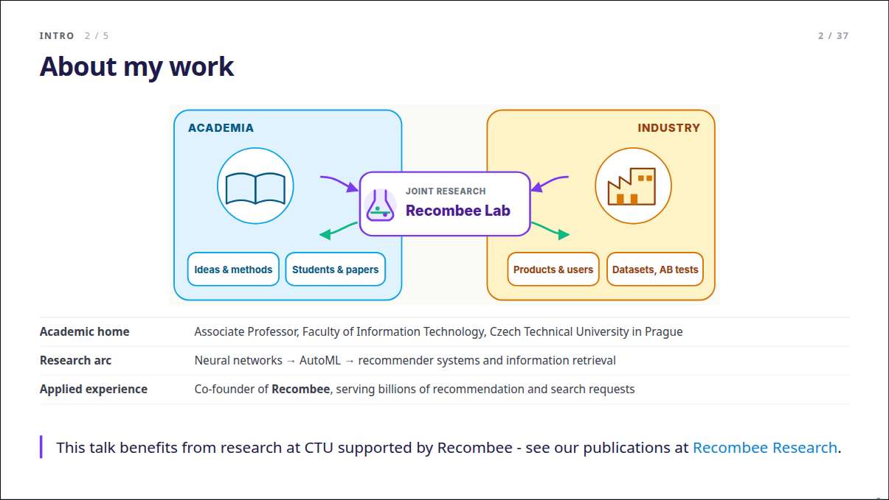
What this slide shows
Three lines of background: an academic home at CTU FIT, a research path that ran from neural networks through AutoML to recommender systems and information retrieval, and applied experience as a co-founder of Recombee. The closing line credits the CTU research that Recombee supports and points to the publication list.
Concepts worth knowing
AutoML, automated machine learning, is the discipline of choosing and tuning models automatically rather than by hand; it matters here because a recommendation service that runs for thousands of different catalogues has to tune itself per catalogue.
A recommender system is software that predicts what a particular person will find useful and presents it; information retrieval (IR) is the older discipline of finding documents relevant to a query. The talk treats them as two faces of one problem.
The argument
The biography establishes why the speaker can talk about both halves of the tension that runs through the talk: academic evaluation on one side, production constraints at the scale of millions of users on the other. The research path explains the recurring question of the talk, how a system decides what a person should see next, first as prediction, later as retrieval and generation.
A 2025 research retrospective — the lab's own summary of a year of work, grouped into sparsity, realistic baselines, sequential modelling, trustworthiness and generative integration.
TakeawayThe evidence in this talk comes from two places at once, a university lab and a production system with real traffic, and the tension between them is part of the message.
003How information retrieval evolved over time?
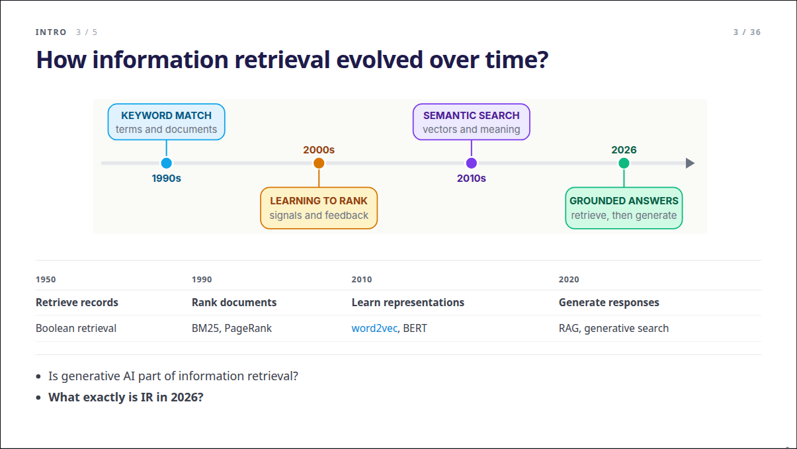
What this slide shows
Four eras of information retrieval: retrieving records with Boolean queries; ranking documents with BM25 and PageRank; learning representations with word2vec and BERT; and generating responses with retrieval-augmented generation and generative search. Two questions close the slide: is generative AI part of information retrieval, and what exactly is IR in 2026?
Concepts worth knowing
Boolean retrieval returns every document that satisfies a logical condition ("contains tax AND deadline") in no particular order. It matches; it does not rank.
BM25 is the classic ranking formula: a document scores higher the more often it contains the query's words, weighted by how rare those words are across the collection, and adjusted for document length. It is still a strong baseline thirty years on.
PageRank scores a web page by the links pointing at it, weighted by the importance of the linking pages, so that authority, not just text, orders results.
An embedding (also "representation" or "vector") is a list of numbers that a model assigns to a word, a document, a product or a person, arranged so that similar things get nearby lists. Once everything is a vector, "similar" becomes a geometric distance a computer can compute quickly. word2vec did this for words in 2013; BERT did it in 2018 for words in context, so that "bank" near "river" and "bank" near "loan" get different vectors.
Retrieval-augmented generation (RAG) is the pattern where a language model is given documents found by a retriever and writes its answer from them, rather than from memory alone.
The argument
The eras are defined by what the system could score, not by technology fashion. Boolean systems matched; probabilistic ranking ordered; learned representations turned similarity into geometry; the generative era retrieves evidence and composes an answer over it. The observation that matters for the rest of the talk is that the last step did not replace retrieval, it wrapped it: a generated answer still stands on a ranked list of evidence. The two closing questions are answered by the talk itself.
TakeawayGeneration did not replace retrieval; it sits on top of it. In 2026, information retrieval is still the selection and ordering of items, whatever the interface then does with them.
004Three interfaces, one ranking problem
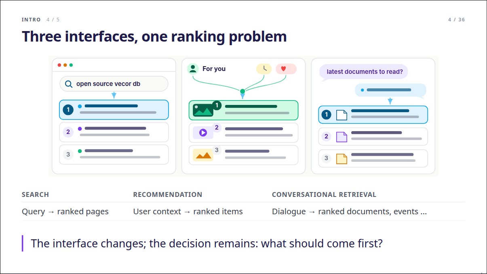
What this slide shows
Three mock-ups side by side, each with numbered results: a search box returning ranked pages, a homepage returning ranked items for a person, and a conversational assistant returning ranked documents or events before it composes an answer. The closing line: the interface changes; the decision remains, what should come first.
Concepts worth knowing
Relevance is the degree to which an item serves the current need; ranking is ordering candidates by an estimate of it. In search the need is the query; in recommendation it is inferred from the person's history and context; in conversation it is the question and the dialogue so far.
A candidate is an item the system considers returning. Almost every real system works in two steps: first pull a manageable set of candidates out of a huge catalogue, then order that set carefully. Later slides call the first step retrieval or candidate generation and the second ranking.
The argument
This is the operational model the rest of the talk relies on. Whatever the surface, the job underneath is to choose a handful of items from a catalogue and put them in order. Even the conversational answer is a ranking with a sentence wrapped around it. The claim is deliberately modest: ranking is the shared subroutine, while objectives, evaluation and economics stay different from one interface to the next, and the second half of the talk is about exactly those differences. A fourth interface, an agent acting on a person's behalf, returns at the end and asks the same question for a new kind of requester.
TakeawayIf you design an information system with a search box, a personalised homepage and an assistant, you have one ranking problem with three front ends, not three problems.
005History of Search, Recommender systems and Conversational AI
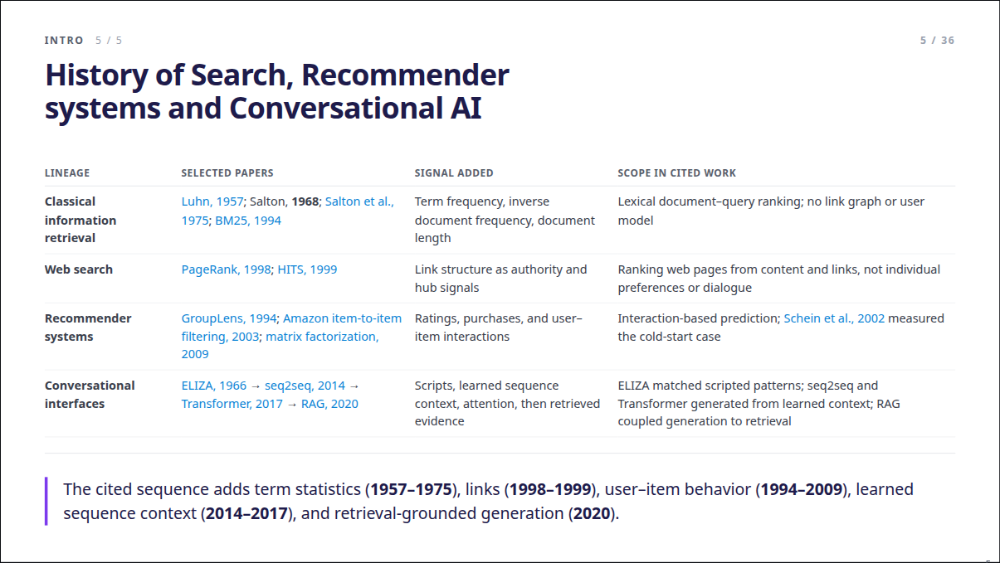
What this slide shows
Four lineages in a table: classical information retrieval (Luhn, Salton, BM25), web search (PageRank, HITS), recommender systems (GroupLens, Amazon's item-to-item filtering, matrix factorization) and conversational interfaces (ELIZA, seq2seq, the Transformer, RAG). For each, the signal it added and the scope of the cited work. The closing line orders the signals in time: term statistics, links, user–item behaviour, learned sequence context, retrieval-grounded generation.
Concepts worth knowing
The vector space model (Salton, 1975) represents both documents and queries as vectors of word weights and scores by the angle between them. It is the ancestor of every embedding method; what changed later is that the vectors are learned rather than counted.
Collaborative filtering recommends items from the behaviour of many users: people who liked what you liked tend to like what you have not seen yet. It needs no description of the items at all, only who interacted with what.
Matrix factorization is the classic way to do that at scale: the large, mostly empty table of users by items is approximated by two small tables of vectors, one per user and one per item, so that a user's predicted interest in an item is the dot product of the two vectors.
Cold start is the failure mode of collaborative methods: a new user or a new item has no interactions yet, so there is nothing to learn from.
seq2seq models (2014) read one sequence and write another, the original neural machine translation; the Transformer (2017) is the architecture that does this with attention instead of recurrence and underlies every modern language model.
The argument
Four communities added four different signals to the same operation, and each new signal came with a new candidate set: documents, then pages, then items for a person, then evidence for an answer. Salton's model is the hinge: it established that documents and queries are vectors, but the similarity stayed lexical, word for word. Learned embeddings, four decades later, gave all four lineages the same representational machinery, which is why they could converge at all.
TakeawayThe four fields grew apart because each optimised a different signal. They could grow back together only once everything, words, documents, items and people, became vectors in the same kind of space.
SEARCH
006Learning to rank added a learned ordering layer
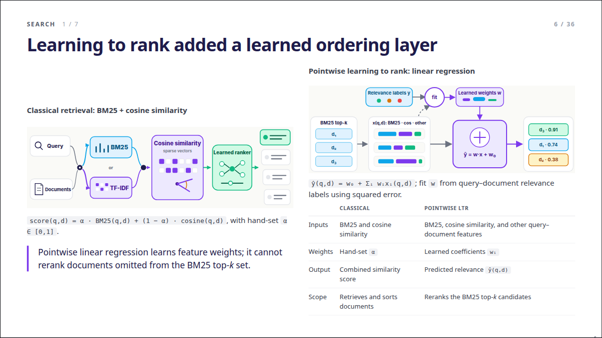
What this slide shows
Two columns. On the left, classical retrieval: BM25 or TF-IDF sparse vectors, cosine similarity, and a hand-set weight α that mixes the two scores into one. On the right, pointwise learning to rank as linear regression: the same signals become features x(q,d) of a query–document pair, a weight vector w is fitted from relevance labels by squared error, and the learned model reranks the top-k candidates that BM25 found. The comparison table makes the shift explicit: a hand-set α becomes learned coefficients; "retrieve and sort" becomes "rerank what the first stage found".
Concepts worth knowing
TF-IDF weights a word in a document by how often it appears there (term frequency) and how rare it is overall (inverse document frequency). A sparse vector is one with a slot for every word in the vocabulary, almost all of them zero; a document is a sparse vector of its word weights.
Cosine similarity is the angle between two vectors: 1 when they point the same way, 0 when they share nothing. It is the standard way to compare a query vector with a document vector.
Learning to rank (LTR) means training a model on examples of queries with documents judged relevant or not, so that it learns how to combine many signals into one ordering. Pointwise LTR scores each document on its own; the alternatives are on the next slide.
Top-k means the k best-scoring candidates from a first, cheap stage; a reranker is a more expensive model applied only to those. Recall is the share of the truly relevant items that made it into the candidate set; a reranker cannot recover what the first stage missed.
The argument
This is the first mechanism slide, and it introduces the pattern the whole stack still uses: a cheap first stage that preserves recall, and a learned second stage that improves the ordering by combining heterogeneous signals. The limitation on the slide is structural: however good the reranker, it only reorders what it was given. That is why candidate generation is a topic of its own later, and why production teams measure retrieval quality and ranking quality separately.
Learning to rank as a discipline goes back to RankNet (Burges et al., 2005) and LambdaMART; the slide keeps to the pointwise linear case because it is the one you can rebuild from a regression you already know.
TakeawayReal ranking systems are two stages: a fast filter that must not miss, and a learned ranker that must order well. Most of what looks like "AI search" is a better second stage on top of a very old first one.
007The model is only half of learning to rank
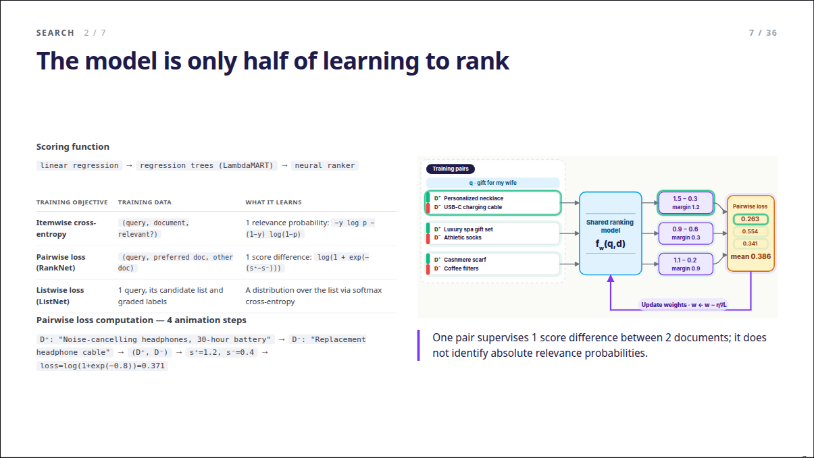
What this slide shows
Two independent choices. The scoring function can be a linear regression, gradient-boosted trees (LambdaMART) or a neural network. Separately, the training data decides what the model can learn: an itemwise cross-entropy loss learns one relevance probability from (query, document, relevant?) triples; a pairwise loss such as RankNet learns one score difference from (query, preferred document, other document); a listwise loss such as ListNet learns a distribution over a whole candidate list from graded labels. A worked example on the right computes the margin between a relevant and an irrelevant document for the query "gift for my wife" and the loss it produces.
Concepts worth knowing
A loss function is the number a model is trained to make small; it defines what "wrong" means. Choosing the loss is choosing the question the model answers.
Cross-entropy is the loss for predicting a probability: it punishes confident wrong answers heavily. Used itemwise it asks "is this document relevant, yes or no".
A pairwise loss looks at two documents for the same query and asks only which should come first; it never learns how relevant either one is on its own. A listwise loss looks at the whole list at once and is closest to the metrics people actually report.
Labels are the judgements the model learns from. Human relevance judgements are expensive, so systems often use clicks instead, and clicks are biased: people click what was shown near the top (position bias) and cannot click what was never shown (exposure bias).
The argument
Practitioners argue about model families and forget that the labels decide what the model can learn. A pairwise example supervises exactly one score difference; it says nothing about absolute relevance, and it needs relative preferences rather than yes/no judgements. Read the training-data column before the model column: that is where production ranking projects most often go wrong, because click-derived labels carry position and exposure bias whichever model consumes them.
Evidence and further reading
RankNet and LambdaMART (Burges and colleagues, Microsoft Research) are the canonical references for pairwise and listwise gradient-boosted ranking; ListNet is Cao et al., 2007.
TakeawayBefore asking which model to use, ask what your labels actually say. The loss function turns labels into a question, and a ranking model can only answer the question it was asked.
008Transformers in search
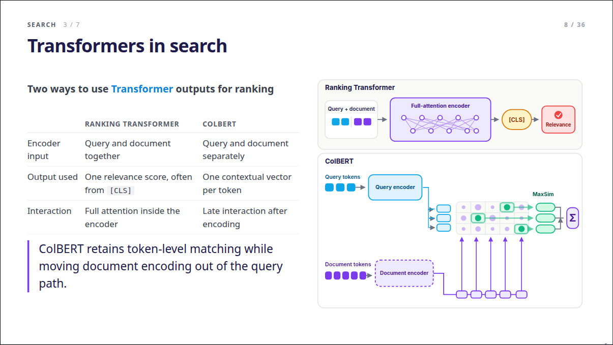
What this slide shows
Two ways to use a Transformer for ranking. A ranking Transformer, or cross-encoder, reads the query and the document together and emits one relevance score, typically from the [CLS] position; the two texts attend to each other inside the encoder. ColBERT encodes query and document separately into one contextual vector per token and scores by late interaction: for each query token, the maximum similarity over the document's tokens, summed. The figure contrasts the two pipelines.
Concepts worth knowing
A Transformer is the neural architecture behind modern language models. Its core operation, attention, lets every token of the input weigh every other token when computing its representation; the output is one contextual vector per token.
A token is the unit a language model reads, roughly a word or a piece of a word. [CLS] is a special first token whose output vector is used to summarise the whole input.
A cross-encoder puts query and document into the model together; it is the most accurate way to score a pair and the slowest, because every pair costs a full pass through the model. A bi-encoder (or two-tower model) encodes them separately, so documents can be encoded once, in advance.
Late interaction is ColBERT's middle way: documents are encoded in advance token by token, and the only work at query time is comparing the query's few token vectors with the stored ones. MaxSim is that comparison: for each query token, the best-matching document token.
An index is a data structure that makes finding candidates fast without scanning everything; here, a store of precomputed token vectors.
The argument
The cross-encoder is the most accurate thing you can do with a Transformer and the least deployable: it can only rerank a short list. ColBERT's move is to keep token-level matching while pushing the document side out of the query path, so the per-query cost is one small encoding plus cheap comparisons. That is the search-side instance of a pattern the recommender side had used for years, precompute the item side and pay per request only for the cheap interaction, and it is the mechanical reason the two stacks could share machinery.
Reimers and Gurevych, 2019 — Sentence-BERT — why cross-encoders cannot be searched: finding the most similar pair among 10,000 sentences costs about 50 million passes, roughly 65 hours on one GPU, against seconds for a bi-encoder plus vector search.
TakeawayAccuracy and deployability pull against each other in Transformer ranking, and the resolution is always the same: do the expensive work on the catalogue in advance, and keep the per-request work small.
009Search became a personalized retrieval problem
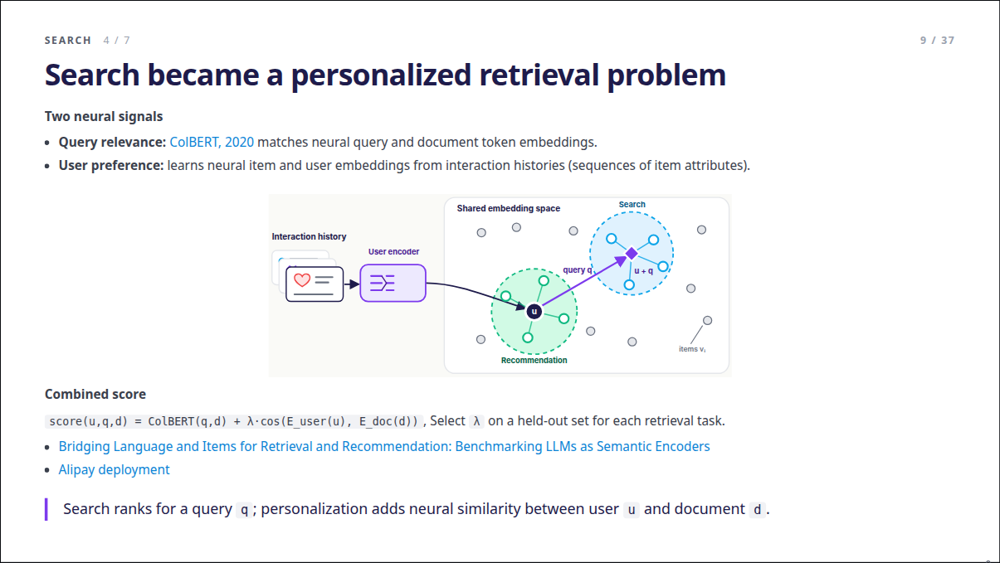
What this slide shows
Two neural signals combine: query relevance from ColBERT-style token matching, and user preference from item and user vectors learned from interaction histories. The figure shows the shared space: a person's history produces a user vector; recommendation retrieves nearby items directly, while search shifts the same vector with a query before retrieving. The combined score is ColBERT(q,d) plus λ times the cosine similarity between the user and the document, with λ chosen on a held-out set per task.
Concepts worth knowing
A user embedding is a vector that summarises a person's behaviour so far, learned so that it sits near the items they engage with. Once users and items live in one space, "what would this person like" becomes "which item vectors are nearest".
Nearest-neighbour search finds the vectors closest to a given one; approximate nearest-neighbour (ANN) indexes do it in milliseconds over millions of items by accepting a small chance of missing the exact best match.
A hyperparameter such as λ is a knob set by the engineer rather than learned; a held-out set is data kept aside from training so that the knob is tuned on examples the model has not seen.
The argument
This is the convergence claim made concrete. Search and recommendation differ in the request, an explicit query versus an implicit profile, not in the representation. Two sources back it at different scales: Alipay trained one search-and-recommendation model across seven of its domains, and the BLaIR benchmark feeds one frozen item-vector table into sequential recommendation, collaborative filtering and product search. One qualification belongs with the claim: this describes logged-in product and site search, in commerce, news and super-apps; public web search has no profile and much stricter privacy constraints.
Hou et al. — BLaIR — one embedding table, three consumers, on 571 million Amazon reviews.
Rajesh et al., 2025 — PinFM — a 20-billion-parameter model of user activity pretrained once and fine-tuned per surface at Pinterest.
TakeawayIn a logged-in product, search is a recommender with a query attached: the same user vector, the same item vectors, one extra term in the score.
010A query is now a hypothesis about intent
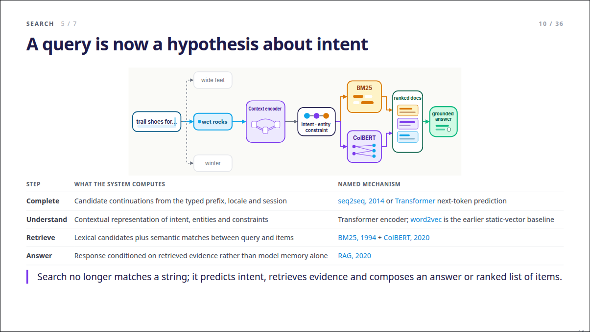
What this slide shows
Semantic search as a four-step pipeline: complete the typed prefix into candidate queries (next-token prediction), understand the intent with a contextual encoder, retrieve lexical and semantic candidates (BM25 plus ColBERT), and answer with a response conditioned on the retrieved evidence (RAG). The closing line: search no longer matches a string; it predicts intent, retrieves evidence and composes an answer or a ranked list.
Concepts worth knowing
Query completion is the suggestion list under a search box; it is a small language model predicting how the typed prefix is likely to continue, given locale and session, and it is itself a recommender.
Intent is what the person wants, as opposed to what they typed; "jaguar price" is a car for one user and an animal print for another, and context decides.
Hybrid retrieval runs a lexical retriever (BM25, exact words) and a semantic retriever (vectors, meaning) side by side and merges the candidates. Each catches what the other misses: exact product codes on one side, paraphrases on the other.
Grounding means an answer is tied to specific retrieved evidence rather than produced from the model's memory. A grounded answer can still be wrong; it can, however, be checked.
The argument
Each step reuses a mechanism from the previous slides: the "semantic" in semantic search is not one model but a pipeline of the same components the recommender uses. Hybrid retrieval stays in the picture on purpose, because BM25 preserves exact terms that dense encoders blur and remains a hard baseline even for the newest retrievers. The last step opens the conversational section: an answer composed over retrieved evidence is grounded, but grounding is not correctness, which slide 17 takes up.
TakeawayA modern search box is a chain of predictions: what you meant, what matches it, and what to say about it. Every link in that chain is a model that can be measured and replaced on its own.
011LLM inference is constrained by memory and scheduling
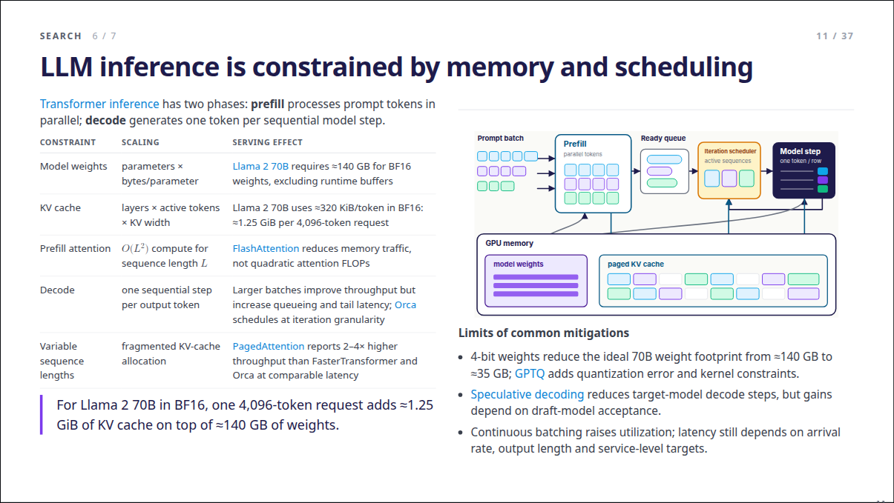
What this slide shows
Transformer inference has two phases: prefill processes the prompt in parallel, decode produces one token per sequential step. The table turns that into capacity arithmetic for Llama 2 70B in 16-bit precision: about 140 GB of weights (70 billion parameters times two bytes), about 320 KiB of key-value cache per token, so about 1.25 GiB per 4,096-token request; prefill attention that grows with the square of the sequence length, which FlashAttention makes memory-efficient without removing the arithmetic; decode throughput that improves with batching at the cost of tail latency, which Orca addresses by scheduling at the granularity of single steps; and fragmented cache memory that PagedAttention fixes, with a reported 2–4× throughput gain over earlier systems at comparable latency. The right column lists the limits of the usual mitigations: 4-bit weights cut the footprint to about 35 GB but add quantisation error; speculative decoding saves decode steps only when a small draft model guesses well; continuous batching raises utilisation but latency still depends on arrival rate and output length.
Concepts worth knowing
Parameters are the learned numbers inside a model; 70 billion of them at two bytes each is 140 GB that must sit in GPU memory before the first token is produced.
Prefill reads the whole prompt at once; decode then writes the answer one token at a time, each step depending on the previous one, which is why long answers are slow no matter how fast the hardware.
The KV cache (key-value cache) stores, for every token seen so far, the intermediate values attention needs, so they are not recomputed at every step. It grows with the length of the conversation: here 320 KiB for every token, over a gigabyte for one long request.
FLOPs are floating-point operations, the currency of compute; latency is how long one request waits, throughput how many requests a system completes per second. Batching many requests together raises throughput and, past a point, latency.
Quantisation stores weights with fewer bits (4 instead of 16) to save memory at some cost in accuracy. Speculative decoding lets a small, fast model propose several tokens that the large model then verifies in one step.
The argument
This is the cost axis seen from the language-model side, and it works in arithmetic rather than benchmarks on purpose. The KV-cache figure is the one to remember: 80 layers, keys and values, 8 key-value heads of dimension 128, two bytes each, is 327,680 bytes per token, so a single long conversation holds more than a gigabyte of state per request. That state is what the serving techniques on slide 23 cache, reuse and deduplicate. Treat the table as capacity planning: any real number depends on the index, the hardware and the recall target.
TakeawayA language model on the request path is a memory problem before it is an accuracy problem: 140 GB to load, more than a gigabyte of state per long conversation, and one sequential step per output token.
012Structure can beat parameter count on the right task
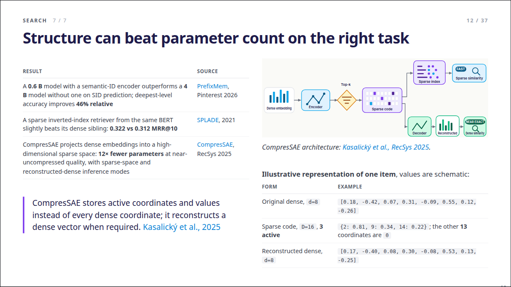
What this slide shows
Three results where structure buys more than parameters. PrefixMem at Pinterest: a 0.6-billion-parameter model with a dedicated encoder for semantic IDs beats a 4-billion one without, with deepest-level accuracy up 46 % relative. SPLADE: a sparse retriever that runs on a classic inverted index, trained from the same BERT as its dense sibling, slightly beats it, 0.322 against 0.312 MRR@10. CompresSAE, from Recombee Labs: dense embeddings projected into a high-dimensional, sparsely activated space give 12× fewer parameters at near-uncompressed quality, with two inference modes, a fast one in the sparse space and an exact one in the reconstructed dense space. The right column shows one schematic item: eight dense values become three active coordinates out of sixteen, and back.
Concepts worth knowing
Dense vectors have a value in every position; sparse vectors are mostly zeros and store only the positions that are active. Sparse vectors are cheaper to store and can be searched with an inverted index, the same structure a keyword search engine uses: for each active coordinate, the list of items that have it.
A semantic ID is a short code, a few small integers, assigned to an item from its content so that similar items get similar codes; slides 16–17 return to why that matters. An encoder is the part of a model that turns an input into a vector.
MRR@10 (mean reciprocal rank) is a ranking metric: if the correct answer is first the score is 1, if second 1/2, if third 1/3, and 0 if it is not in the top ten; averaged over queries.
An autoencoder is a model trained to compress its input and reconstruct it; a sparse autoencoder is one whose compressed form is a wide vector with only a few active entries.
The argument
Sometimes a bigger model wins, and the claim on the slide is the narrower one: on a constrained task, the right structure can dominate parameter count. Pinterest's result reuses a lesson from multimodal language models, that a non-language input wants its own encoder, for semantic IDs. CompresSAE is the lab's version of the same idea for retrieval: sparsity as a design decision rather than a compression applied afterwards, with a dial between speed and exactness that can be turned at run time.
TakeawayBefore paying for a larger model, ask whether the task has structure the model is not being given. A small model with the right encoder, or a sparse representation with the right index, often does the job for a fraction of the cost.
RecomMendation
013Recommenders learn what matters to each user
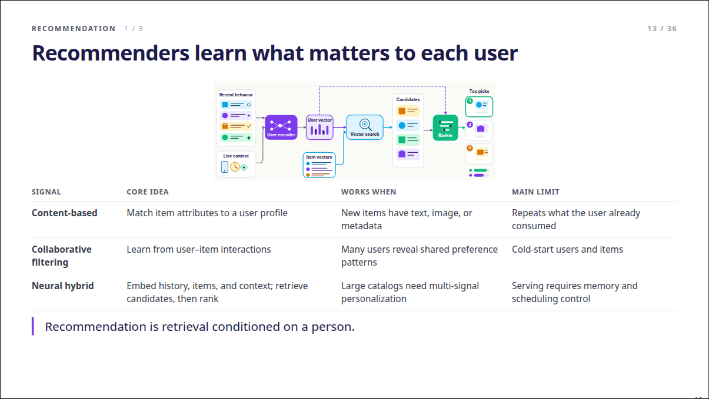
What this slide shows
Three families of recommendation signal, with what each does, when it works and where it fails. Content-based methods match item attributes to a profile and work for new items that have text, images or metadata, but tend to repeat what the person already consumed. Collaborative filtering learns from user–item interactions, works when many users reveal shared patterns, and fails at cold start. The neural hybrid embeds history, items and context, retrieves candidates and then ranks them; it handles large catalogues that need several signals at once, at the price of serving that needs memory and scheduling under control. The closing line: recommendation is retrieval conditioned on a person.
Concepts worth knowing
Content-based recommendation uses what an item is: its description, category, image. It can recommend a brand-new item, but only ever things that look like what you already chose.
Collaborative filtering uses what people do: which items were consumed together, by whom. It discovers non-obvious connections and needs no descriptions, but a new item or a new user with no history is invisible to it (cold start).
A hybrid combines both; modern systems do so by embedding everything, people, items and context, into one vector space, then retrieving candidates and ranking them, the same two stages as search.
Context means the circumstances of the request: time, device, location, the page being viewed, the session so far. The same person wants different things on Monday morning and Saturday night.
The argument
This is the recommender counterpart of slide 10. The flow in the figure, a person's interactions into one encoder, item features into another, nearest candidates into a ranker, is the retrieve-then-rank pipeline the search slides built, with the person's history standing in for the query. The column to read is "works when": the choice between families is decided by what data the catalogue actually has, which is also the lesson of the evaluation work later in the talk, where the best encoder depended on the catalogue.
Naumov et al., 2019 — DLRM — the industrial feature-cross architecture that still ranks in much of production.
Kim et al., KDD 2024 — A-LLMRec — the cold/warm split made measurable: language and image models beat collaborative filtering on new items and lose to it on items with history.
TakeawayContent tells you what an item is; behaviour tells you what people do with it. A system needs both, and it should know which one it is missing for a given item or person.
014User-based collaborative filtering: borrow votes from similar users
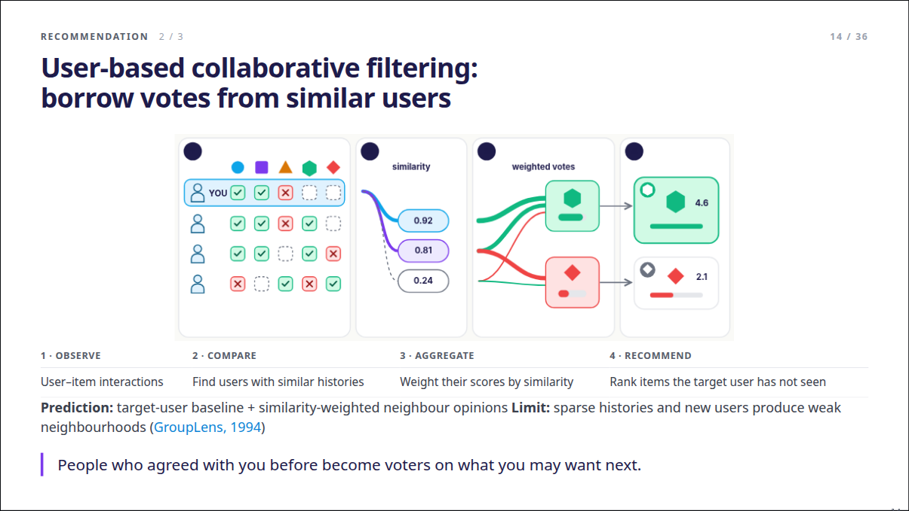
What this slide shows
The mechanism in four steps: observe user–item interactions, compare users by the overlap of their histories, aggregate the neighbours' scores weighted by similarity, and recommend the items the target person has not seen, ranked. The prediction is a baseline for the target person plus the similarity-weighted opinions of the neighbourhood. The limit is stated on the slide: sparse histories and new users produce weak neighbourhoods.
Concepts worth knowing
The interaction matrix is the table with one row per user and one column per item, a mark where an interaction happened. In real systems it is more than 99.9 % empty, which is what sparsity means here.
User–user similarity measures how much two rows overlap; the neighbourhood is the handful of most similar users. Their behaviour is treated as a vote about what the target person might want.
The item-based variant flips the table and asks which items are consumed together; "people who bought this also bought" is that method, and it is what large shops actually run because item relationships change more slowly than user profiles.
The argument
One classical algorithm, taught fully, so that "collaborative filtering" is not a black box for the rest of the talk. Two properties matter later. The method needs no item text at all, which is its strength on established catalogues and its weakness at cold start. And its item-based form is the lineage that leads to the linear models on slide 24, which are in effect a learned, regularised version of this neighbourhood.
TakeawayPeople who agreed with you before become voters on what you may want next. The method is simple, needs no descriptions, and goes blind exactly when there is no history to compare.
A live demonstration on a public film catalogue. On the recommendation side: pick a title and inspect similar items, switch user profiles to compare personalised rows, add one interaction and watch the ranking change. On the search side: type a descriptive query such as "quiet European crime drama", refine it before applying explicit filters, and compare the semantic results with an exact-title query. The closing line adds that search and recommendation of item segments matters here too.
Concepts worth knowing
Semantic search matches meaning rather than words: "quiet European crime drama" finds films that are described in other terms, because the query and the descriptions are compared as vectors.
A personalised row is a horizontal list on a homepage whose contents, and often whose order among other rows, depend on the person viewing it.
Item segments are groups of similar items discovered automatically from the catalogue and given names; they can be searched, recommended and used in analytics like any item.
The argument
The demo separates the two signals the previous slides defined: behavioural history drives the personalised rows, while typed text expresses immediate intent through semantic search, and both run against the same catalogue vectors. Seeing one profile switch change the rows, and one descriptive query find films no keyword would, makes slide 9 tangible before the conversational section asks the harder question: can language steer a profile, not just a query?
TakeawayThe same catalogue vectors answer both "what would this person like" and "what matches this sentence"; the difference is only where the query comes from.
Conversational recommendation
016You cannot edit your own vector in recommender systems
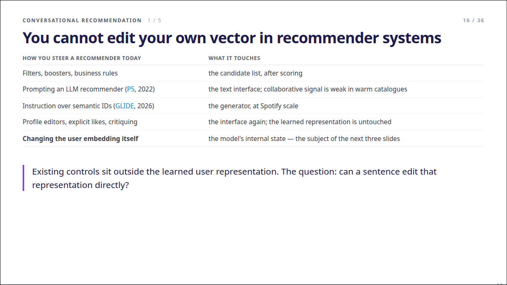
What this slide shows
A table of the ways a recommender can be steered today and what each of them touches. Filters, boosters and business rules act on the candidate list after scoring. Prompting a language-model recommender (P5) acts on the text interface, where collaborative signal is weak for items with history. Instruction over semantic IDs (GLIDE at Spotify) acts on the generator. Profile editors, explicit likes and critiquing act on the interface again; the learned representation stays untouched. The last row, changing the user vector itself, is the subject of the next slides. The closing question: can a sentence edit that representation directly?
Concepts worth knowing
Business rules, filters and boosters are the controls product teams have: exclude items on these conditions, push these up. They act after the model has scored, so they cannot change what the model believes about you.
A prompt is the text given to a language model; prompting a recommender means describing the person in words and asking the model what to suggest. It works for what can be said in words and loses the statistical signal of thousands of similar users.
Critiquing is a conversational pattern where the person reacts to a suggestion ("cheaper", "less violent") and the system adjusts the next one; it changes the query, not the profile.
The learned user representation is the vector from slide 9: the model's internal summary of a person, which no interface so far lets the person read or edit.
The argument
The section opener states the gap precisely: every existing control operates outside the learned user representation. That vector is what the system believes about you, nobody can read or edit it, and the only way to move it has been to click and wait for the model to notice. The next four slides give one concrete way to move it with a sentence, evaluated offline across four different models.
Hradil, 2026 — Natural Language Steering of Recommender Systems via User Embedding Manipulation, master's thesis, CTU FIT, supervised by Rodrigo Alves — the work behind slides 19 and 20, listed with the lab's research at recombee.com/research.
TakeawayEvery control you have over a recommender today acts around the model's picture of you, not on it. The open question of this section is whether plain language can act on it directly.
017LLM as a recommender: A language model is not a catalogue
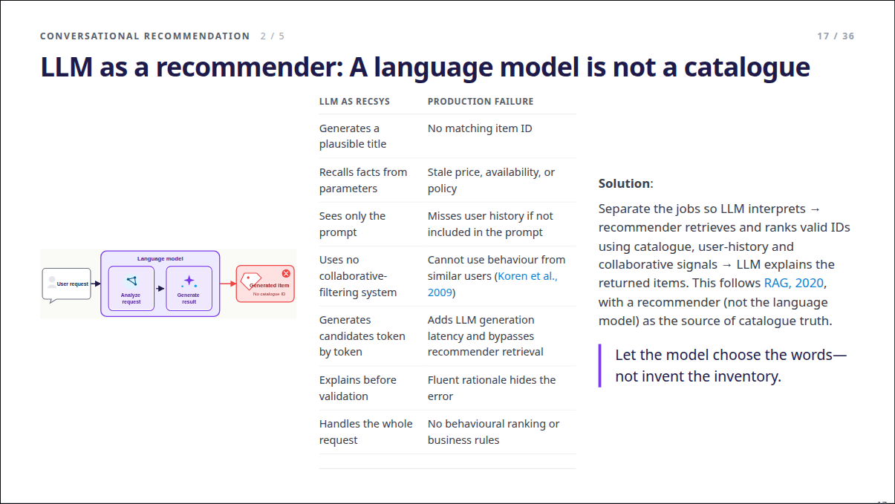
What this slide shows
Three columns. Left, the failure: a request goes into a language model, which analyses it and generates an item that has no catalogue ID. Middle, what goes wrong in production when the model is the recommender: plausible titles with no matching ID, stale prices and availability recalled from memory, user history missed unless it is in the prompt, no collaborative signal from similar users, token-by-token candidate generation that adds latency and bypasses retrieval, fluent rationales that hide errors, and no business rules. Right, the solution: separate the jobs. The language model interprets; the recommender retrieves and ranks valid IDs from the catalogue, the person's history and collaborative signals; the language model explains what came back. The closing line: let the model choose the words, not invent the inventory.
Concepts worth knowing
Hallucination is a language model producing confident content that is not true. In recommendation it usually takes a specific form: an item that does not exist, is out of stock, or breaks a rule, described in perfectly plausible words.
A catalogue ID is the identifier your inventory system knows an item by. A model that outputs names instead of IDs has not recommended anything your system can act on.
Parametric memory is what the model absorbed during training; it is frozen at that time and cannot know today's prices or stock.
Constrained decoding forces a generating model to produce only outputs from an allowed set, for example only identifiers that exist; it turns "rarely invents items" into "cannot invent items".
The argument
Prompting the model to be careful cannot guarantee catalogue validity; the boundary has to be enforced with identifiers and validation. The architecture on the right is retrieval-augmented generation with a recommender, rather than a document index, as the source of truth. The literature agrees on the middle column's most important row: language-model recommenders without collaborative knowledge lose to plain collaborative filtering on items that have history, because a prompt cannot see what thousands of similar users did.
Kim et al., KDD 2024 — A-LLMRec — language-model recommenders beat collaborative filtering on new items and are beaten by it on items with history; the paper's fix aligns the language model with a frozen collaborative model.
Wu et al. — RAG survey — the named failure modes of retrieval-augmented systems and faithfulness to evidence as the metric.
TakeawayGive the language model the words and the recommender the inventory. A system that lets the model name items will eventually name one you do not have.
A proof of concept in which language and inventory have separate authority. The language model parses requests and follow-ups, converts them into preference updates and explains the returned set; the recommendation system retrieves and ranks the live catalogue, returns canonical item IDs with metadata and remains the only source of recommendable items. The two collaborate to produce the final ranking, which is then presented directly or as a generated summary.
Concepts worth knowing
A preference update is a structured change to what the recommender is asked for: "more like this", "cheaper", "not horror", expressed as parameters the recommender understands rather than as prose.
Canonical item IDs and metadata are the recommender's own records for the items it returned; rendering only those, and never text the language model produced about items, is what keeps the boundary honest.
The argument
The demo does not ask the language model to remember the catalogue. Language operates the recommender; the interface renders only entities the recommender returned. That prevents item hallucination by construction at the user-interface boundary. What it does not prevent is worth saying: intent parsing and generated explanations can still be wrong, which is why the alignment section later treats the evaluation of judges and explanations as engineering rather than trust. The revealing moment on stage is to ask for a film that does not exist and watch the system decline rather than invent.
Evidence and further reading
Recomflix demo — the proof of concept on the public catalogue.
D'Amico et al., 2026 — GLIDE — the same separation at Spotify scale, with generation constrained to the identifiers of real shows.
TakeawayLanguage in, identifiers out: the assistant can be as fluent as it likes as long as every item it shows came from the system that owns the inventory.
019Unfold the vector: sparse autoencoders make a profile legible
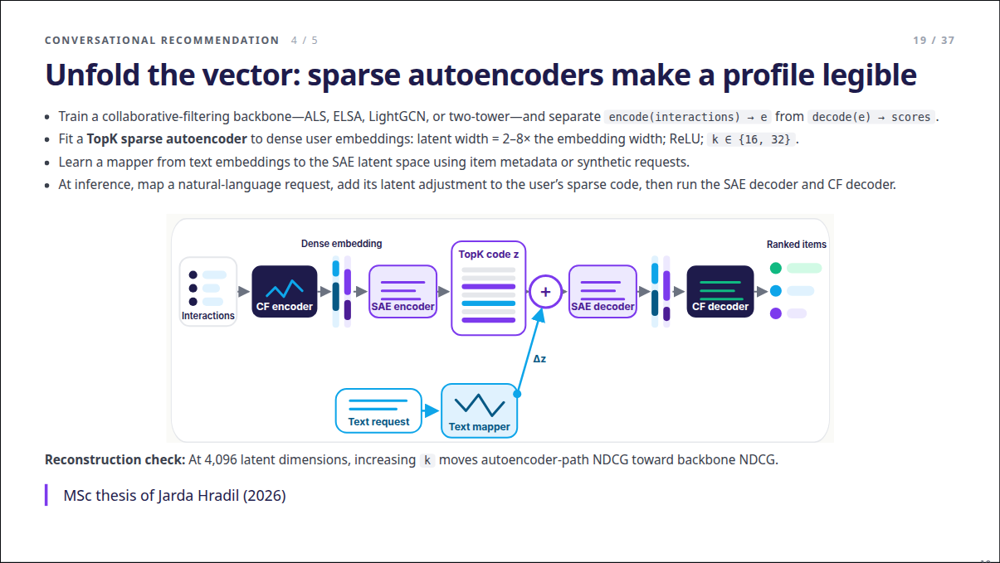
What this slide shows
The offline part of the steering pipeline from Jaroslav Hradil's 2026 master's thesis at CTU. Train a collaborative-filtering model (ALS, ELSA, LightGCN or a two-tower model) and expose it as two functions: encode a person's interactions into a dense vector, and decode a vector into item scores. Fit a TopK sparse autoencoder to the dense user vectors: a latent two to eight times wider than the vector, a ReLU, and only the k largest activations kept, with k of 16 or 32. Learn a mapper from text vectors into that sparse latent, using item metadata or synthetic requests. At inference, map a natural-language request into a latent adjustment, add it to the person's sparse code, then decode through the autoencoder and the recommender. The reconstruction check: at 4,096 latent dimensions, increasing k moves the quality through the autoencoder path toward the recommender's own.
Concepts worth knowing
A dense user vector is polysemantic: one coordinate may mean "science fiction and documentary and adventure" at once, because the model packed several notions into it. A sparse autoencoder unfolds it into a much wider vector in which most coordinates mean one thing and only a few are active for any one person; those coordinates can then be addressed individually.
TopK keeps only the k largest activations and zeroes the rest; it is how the sparsity is enforced. A ReLU is the simplest neural non-linearity: negative values become zero.
ALS, ELSA, LightGCN and two-tower are four different families of collaborative model; the method is called backbone-agnostic because it wraps any of them without retraining them.
NDCG (normalised discounted cumulative gain) is a standard ranking metric: it rewards putting the truly relevant items near the top, with diminishing credit further down. The reconstruction check asks whether NDCG through the autoencoder stays close to the recommender's own.
The argument
Two tools from the language-model world, transplanted. Sparse autoencoders were built to read the internals of large language models by unfolding tangled directions into mostly single-meaning features; here they read the internals of a collaborative filter. Nothing in the underlying recommender is retrained, which is what makes the method work across four different models. The reconstruction check is the licence to do this at all: the sparse code loses little of the recommendation quality.
Evidence and further reading
Hradil, 2026 — master's thesis, CTU FIT, supervised by Rodrigo Alves and computed on Recombee infrastructure; listed at recombee.com/research.
TakeawayA recommender's picture of you is a tangle of numbers; a sparse autoencoder unfolds it into a few named knobs without retraining anything. That is the precondition for letting a sentence turn one of them.
020Say it: a sentence becomes a direction in that space
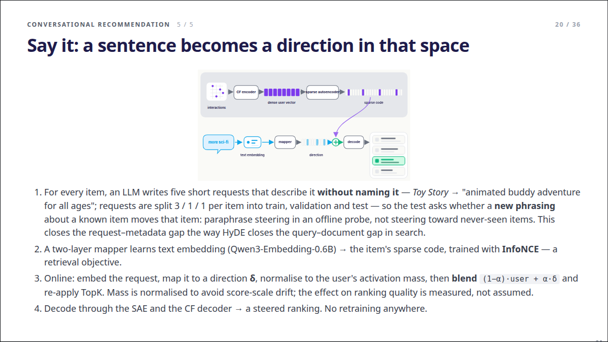
What this slide shows
The online part, and how the mapper is trained. For every item a language model writes five short requests that describe it without naming it, "animated buddy adventure for all ages" for Toy Story; the requests are split three, one and one per item into training, validation and test, so the test asks whether a new phrasing about a known item moves that item. A two-layer mapper learns from the text vector (Qwen3-Embedding-0.6B) to the item's sparse code, trained with InfoNCE, a retrieval objective. Online, the request is embedded, mapped to a direction δ, normalised to the person's activation mass, blended as (1−α)·user + α·δ, TopK re-applied, then decoded through the autoencoder and the recommender. Mass is normalised to avoid score-scale drift; the effect on ranking quality is measured, not assumed. No retraining anywhere.
Concepts worth knowing
A text embedding model turns a sentence into a vector; Qwen3-Embedding-0.6B is a small open one built for search. The steering request is, literally, a search query.
InfoNCE is a contrastive training objective: pull the vector of a request toward the vector of its item and push it away from the other items in the batch. It is the recipe behind dense retrieval and behind CLIP's image–text matching.
Synthetic requests stand in for the requests real users would type, which do not exist yet for a new mechanism. Writing them from item metadata is the same trick that HyDE uses in search, where a model writes a hypothetical document for a query.
α is the strength of steering, from 0 (the profile unchanged) to 1 (the profile fully replaced by the request); a product would expose it as a slider.
MRR here is the reciprocal rank of the requested item; a rise from 0.042 to 0.324 is, in reciprocal-rank terms, a move from about 24th place to about 3rd.
The argument
This is where the convergence thesis shows up inside the lab's own work: the recommender is steered by the machinery of semantic search, a text embedder, a contrastive objective and synthetic queries, pointed at the user vector instead of at documents. The results from the thesis: on the MIND news dataset with the ELSA backbone the requested item's mean reciprocal rank rises from 0.042 to 0.324; on MovieLens-25M with ALS it roughly doubles, 0.111 to 0.216. Two controls matter. Steering toward a random other item lowers the target's rank, so the effect is meaning rather than mixing; and without the sparse autoencoder the same mapper reaches only 0.144 instead of 0.235 on MIND. The limits belong beside the numbers: an offline study with no user study, a probe that credits only the exact item, additive requests only ("less action" is not handled yet), and a test built from paraphrases about known items.
Evidence and further reading
Hradil, 2026 — master's thesis, CTU FIT; Tables 5.1–5.4 and the ablations behind the numbers above; listed at recombee.com/research.
TakeawayA sentence can move a recommender's picture of you, using nothing but search machinery and no retraining; moderate steering enriches the profile with the topic, full steering overwrites it, and the dial in between is the product.
IV · The Cost Constraint
021What a query costs at a hundred million users
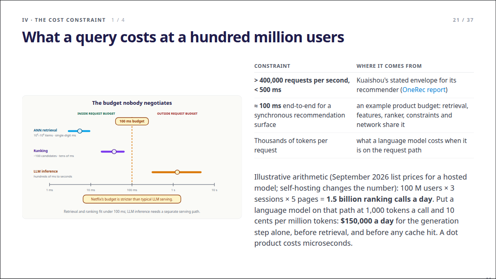
What this slide shows
The budget nobody negotiates. Kuaishou states its recommender's envelope as more than 400,000 requests per second under 500 milliseconds; an example synchronous surface has about 100 milliseconds end to end, shared by retrieval, features, ranking, constraints and the network; a language model on the request path costs thousands of tokens per call. The arithmetic, at September 2026 list prices for a hosted model: 100 million users, three sessions and five pages a day make 1.5 billion ranking calls; at 1,000 tokens a call and ten cents per million tokens, the generation step alone is $150,000 a day, before retrieval and before any cache hit. A dot product costs microseconds.
Concepts worth knowing
QPS (queries per second) is the load a system must carry at peak; 400,000 per second is the scale of a national short-video platform.
Latency budget is the time one request is allowed to take, typically stated for the slow tail (the 95th or 99th percentile), not the average; a page that is fast on average and slow for one user in twenty is a slow page.
Tokens are what language models are priced in, both for the text sent and the text produced; a request with a long history costs more every time the history is resent.
A dot product is the multiplication of two vectors into one number, the operation that scores an item against a user in a vector model; it costs a few nanoseconds per item.
A cache hit is a request answered from stored results instead of recomputed; the arithmetic on the slide assumes none, which is the worst case.
The argument
The cost axis in one sentence of arithmetic. Cost per request is a learning objective, not an operations detail: in Recombee's own taxonomy of recommender objectives, cost efficiency and sub-100-millisecond response sit among the goals of the learning problem. The Kuaishou quotation is chosen because it is a production team saying, in its own report, that recommenders "are often constrained to operate at a low scale and are not computation-intensive" because of exactly this envelope. Self-hosting changes the numbers; it does not change the shape.
TakeawayMultiply your users by their pages by the cost of one model call before you design the system. A vector lookup and a language-model call differ by six orders of magnitude, and the request path is where that difference is paid.
022Compute versus value
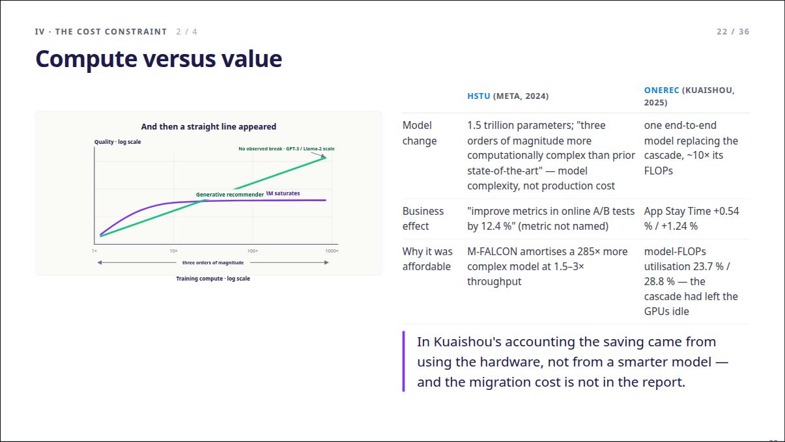
What this slide shows
Two systems that claim a scaling law for recommendation, and their bills. Meta's HSTU: 1.5 trillion parameters, a model "three orders of magnitude more computationally complex than prior state-of-the-art", and in the paper's own words a 12.4 % improvement in online A/B metrics, the metric not named; affordable because a serving algorithm, M-FALCON, amortises a 285× more complex model at 1.5–3× throughput. Kuaishou's OneRec: one end-to-end model replacing the four-stage cascade at about ten times its arithmetic, App Stay Time up 0.54 % and 1.24 % on the two apps, and operating expense at 10.6 % of the old pipeline, because utilisation of the accelerators rose to 23.7 % in training and 28.8 % in inference where the cascade had left them idle. The closing line: in Kuaishou's accounting the saving came from using the hardware, not from a smarter model, and the migration cost is not in the report.
Concepts worth knowing
A scaling law is the empirical finding, first in language models, that quality improves predictably as a straight line on log scales when training compute grows. The claim here is that recommendation models follow one too, once they are built like language models.
An A/B test shows two versions of a system to two random groups of real users and compares a business metric; it is the only measurement the whole industry accepts, and the slide's numbers are its outputs. App Stay Time is one such metric: how long people stay in the app.
A cascade is the multi-stage pipeline of slide 6 (retrieve, pre-rank, rank); an end-to-end model replaces the stages with one model trained for the final outcome.
MFU (model FLOPs utilisation) is the share of an accelerator's arithmetic capacity that useful model work actually uses; the rest is lost to data movement and waiting. OPEX is operating expense, the running cost.
The argument
Both papers say the scaling law of language models holds for recommendation; the fine print holds the systems lesson. A platform with billions of users can afford a thousandfold model complexity for twelve percent, because one percent of billions is a large number, an economic intuition rather than a result from the paper. Kuaishou's message is more useful to most organisations: fragmenting the work into stages wasted the accelerators, so a single model at ten times the arithmetic cost a tenth as much to run. Neither paper reports what rebuilding the stack cost, and nobody has.
TakeawayAsk two questions of any "bigger model wins" result: what did the gain cost per request, and where did the saving actually come from. In one of the two flagship cases it came from finally using the hardware, not from the model.
023Four serving levers
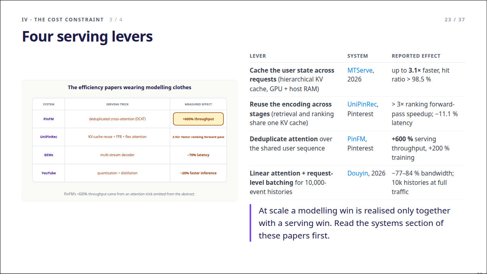
What this slide shows
Four engineering ideas that made large recommendation models fit the budget. Cache the person's state across requests with a hierarchical key-value cache spanning GPU and host memory (MTServe: up to 3.1× faster, hit ratio above 98.5 %). Reuse the encoding across stages so retrieval and ranking share one cache (UniPinRec at Pinterest: more than 3× faster ranking passes, 11.1 % lower end-to-end latency). Deduplicate attention over the shared user sequence (PinFM: 600 % more serving throughput, 200 % more in training). Replace history self-attention with linear target-to-history cross-attention and batch by request for 10,000-event histories (Douyin: 77–84 % less bandwidth, at full traffic). The closing line: at scale a modelling win is realised only together with a serving win.
Concepts worth knowing
The user state is the encoding of a person's history that the model computes before scoring candidates; it is the expensive part of every request and the same across the many candidates and stages of one request, which is why it can be cached, shared and deduplicated.
Self-attention over a history of n events costs n² comparisons; cross-attention from a candidate to the history costs n, which is what makes 10,000-event histories affordable.
Batching groups requests or candidates so the accelerator works on many at once; request-level batching groups everything that belongs to one person so their history is encoded a single time.
Bandwidth is the rate at which data moves between memory and the accelerator; at this scale it, not arithmetic, is usually the bottleneck.
The argument
Every row is a serving idea that unlocked a modelling result; without the kernel or the cache, the model would not have shipped. The pattern for anyone building such a system: the person's history is the expensive part of every request, so cache it, share it between stages and never encode it twice. At scale the model and the serving are designed together, which is why the systems section of these papers is the one to read first.
TakeawayThe person's history is the expensive part of every request. Cache it, share it between stages, never encode it twice; the modelling gains in these papers were only realisable because of those three decisions.
024Linear models are not dead
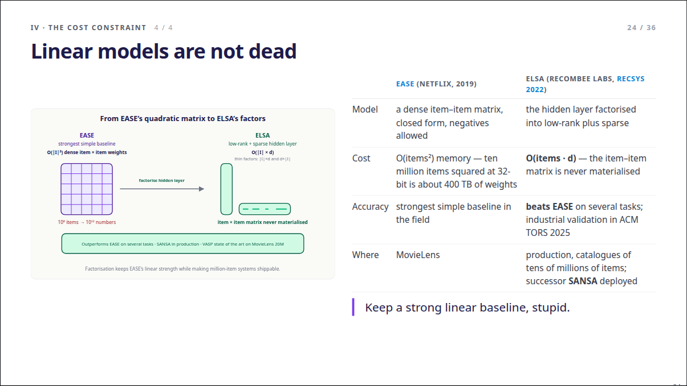
What this slide shows
EASE against ELSA. EASE, from Netflix in 2019: a dense item–item matrix in closed form, negative weights allowed, the strongest simple baseline in the field, and quadratic memory, ten million items squared at 32 bits is about 400 terabytes of weights, so it never starts on a large catalogue. ELSA, from Recombee Labs at RecSys 2022: the hidden layer factorised into a low-rank plus sparse part, memory linear in the catalogue, the item–item matrix never materialised, more accurate than EASE on several tasks, validated at industrial scale in ACM Transactions on Recommender Systems 2025, in production for catalogues of tens of millions of items, with a deployed successor, SANSA. The closing line: keep a strong linear baseline.
Concepts worth knowing
An item–item model scores an item for a person as a weighted sum over the items in their history; the weights form a matrix with one row and one column per item. It is the learned form of "people who consumed this also consumed that".
A closed-form solution is one computed by a formula in one step rather than by iterative training; EASE is a single matrix inversion.
Quadratic memory means the cost grows with the square of the catalogue: doubling the items quadruples the matrix. Low-rank means a large matrix is represented as the product of two thin ones; sparse means most entries are zero and only the rest are stored. ELSA uses both to avoid ever building the full matrix.
A baseline is the simple method any new model must beat under identical conditions; overfitting is a model learning the noise in its training data rather than the pattern, and linear models are hard to overfit.
The argument
The line from the field's reproducibility crisis to the lab. The methods that kept beating neural recommenders in the 2019 study were linear and neighbourhood-based, and the reason nobody deployed the best of them was a quadratic matrix. ELSA removes the matrix, scales linearly in the catalogue and is more accurate, not merely cheaper; a 2026 study of diffusion recommenders found the same pattern again, with a 25-year-old ItemKNN matching the newest models. Linear models are hard to overfit, which on sparse, high-dimensional interaction data is an advantage rather than a limitation.
TakeawayPut a strong, tuned linear model in every comparison. Twice in seven years the field found that most of its newest models did not beat one, and the one that could not be deployed only needed its matrix factorised.
Our Transformers and multimodal foundational models
025beeFormer: interaction data inside the text encoder
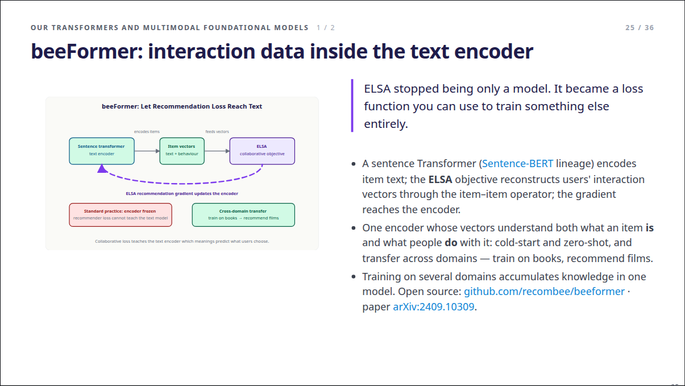
What this slide shows
The mechanism from the lab's RecSys 2024 paper. A sentence Transformer of the Sentence-BERT family encodes each item's text; the ELSA objective reconstructs users' interaction vectors through an item–item operator built from those text vectors; and the gradient of that objective flows back into the encoder. The result is one encoder whose vectors know both what an item is and what people do with it, which gives cold-start and zero-shot recommendation and transfer across domains, train on books and recommend films. Training on several domains accumulates knowledge in one model. The closing line: ELSA stopped being only a model and became a loss function you can use to train something else entirely.
Concepts worth knowing
A sentence Transformer is a language model fine-tuned so that one vector per text is meaningful on its own; it is the standard encoder behind semantic search.
Gradient flow is how a neural network learns: the error at the output is traced back through every layer to adjust the weights. Letting the recommendation error flow into the text encoder means the encoder itself learns what people do, not only what things are called.
Zero-shot means working on a catalogue the model was never trained on; transfer means knowledge learned on one domain helps on another.
Semantic similarity is closeness of descriptions; interaction similarity is closeness of consumption. Two products can be described alike and bought by different people, or described differently and bought together.
The argument
Several industrial labs reached the same pattern with large language models: Xiaohongshu's NoteLLM lets a 7-billion-parameter model both embed and generate notes, and Recformer treats an item as a sentence of its attributes. beeFormer does it with a small sentence encoder and a linear loss, which is what makes it trainable on ordinary hardware. It also explains the observation behind slide 13: an off-the-shelf text embedding from a retrieval leaderboard knows similarity of descriptions, not of consumption, and the interaction loss is how the encoder learns the second.
Hou et al. — BLaIR — the benchmark that shows why a frozen language-model encoder alone misses collaborative signal.
TakeawayA text encoder can be taught what people do, not only what things are called, by letting the recommender's error flow into it; that one change is what makes new items recommendable from their description.
026Our REEF protocol, evaluation of recsys foundational models
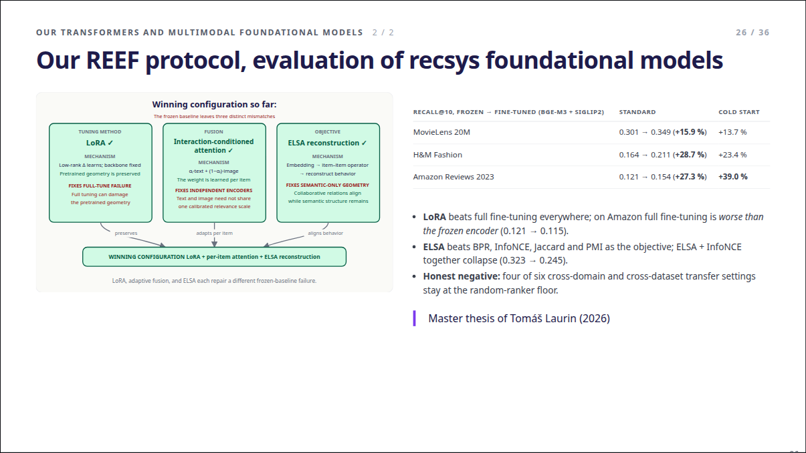
What this slide shows
Results from Tomáš Laurin's 2026 master's thesis at CTU. REEF, the Recommender Embedding Evaluation Framework, holds the data loader, the task, the downstream ranker and the evaluator fixed so that only the encoder changes; eight encoders including a non-semantic baseline, three catalogues and five scenarios give 120 evaluation cells. The table reports Recall@10 for the multimodal BGE-M3 + SigLIP2 encoder, frozen against fine-tuned on interactions: MovieLens 20M 0.301 → 0.349 (+15.9 %), H&M Fashion 0.164 → 0.211 (+28.7 %), Amazon Reviews 2023 0.121 → 0.154 (+27.3 %), with cold-start gains of 13.7 %, 23.4 % and 39.0 %. LoRA beat full fine-tuning everywhere; on Amazon, full fine-tuning was worse than leaving the encoder frozen (0.121 → 0.115). ELSA beat BPR, InfoNCE, Jaccard and PMI as the training objective, and ELSA combined with InfoNCE collapsed (0.323 → 0.245). The honest negative: four of six cross-domain and cross-dataset transfer settings stayed at the random-ranker floor. The winning configuration in the figure: LoRA, interaction-conditioned attention fusion of text and image, and the ELSA reconstruction loss.
Concepts worth knowing
A foundation model is a large model pretrained on broad data and adapted to many tasks; a backbone or encoder is the pretrained part that turns text or images into vectors. BGE-M3 is a text encoder, SigLIP2 an image–text encoder; multimodal means both are used together.
Recall@10 is the share of the items a person actually went on to interact with that appear in the top ten recommended; here it is computed against 999 randomly sampled other items, a common shortcut that makes the numbers comparable within the study rather than across the literature.
Fine-tuning adapts a pretrained model to new data by continuing training; LoRA (low-rank adaptation) does so by training a small add-on while the original weights stay frozen, which is cheaper and, as this study shows, safer.
BPR, InfoNCE, Jaccard, PMI are alternative training objectives, ways of telling the encoder what counts as a good item vector; ELSA won because it aligns the vector geometry with collaborative behaviour while keeping the pretrained semantics.
Fusion is how the text and image vectors of one item are combined; interaction-conditioned attention lets the model weigh them per item, guided by which items were consumed together.
The argument
The thesis names a problem the field had not isolated, the backbone isolation problem: when a pretrained encoder is judged inside a whole pipeline, its merit is confounded with the ranker, the training budget and the data split, so two teams comparing encoders disagree and neither is wrong. The answer is a protocol, not a model; Snap's GRID handbook reached the same diagnosis for generative recommenders in the same year and also answered with a framework. The fine-tuning result generalises beeFormer to text plus image, and finds that the 2022 linear loss aligns the vector space with collaborative behaviour while keeping enough semantic structure for cold start. The negative result is part of the finding: transfer to a disjoint catalogue did not work, and a method that says so is more useful than one that does not.
Evidence and further reading
Laurin, 2026 — Training and Evaluation of Foundation Models for Recommender Systems, master's thesis, CTU FIT, supervised by Pavel Kordík; listed at recombee.com/research.
TakeawayYou cannot say which encoder is better until everything else is held still. Held still, a frozen encoder with a small adapter and the right objective gained 16–29 % — and the objective that won was a linear loss from 2022.
V · Alignment Engineering
027Alignment is a table of measurable properties
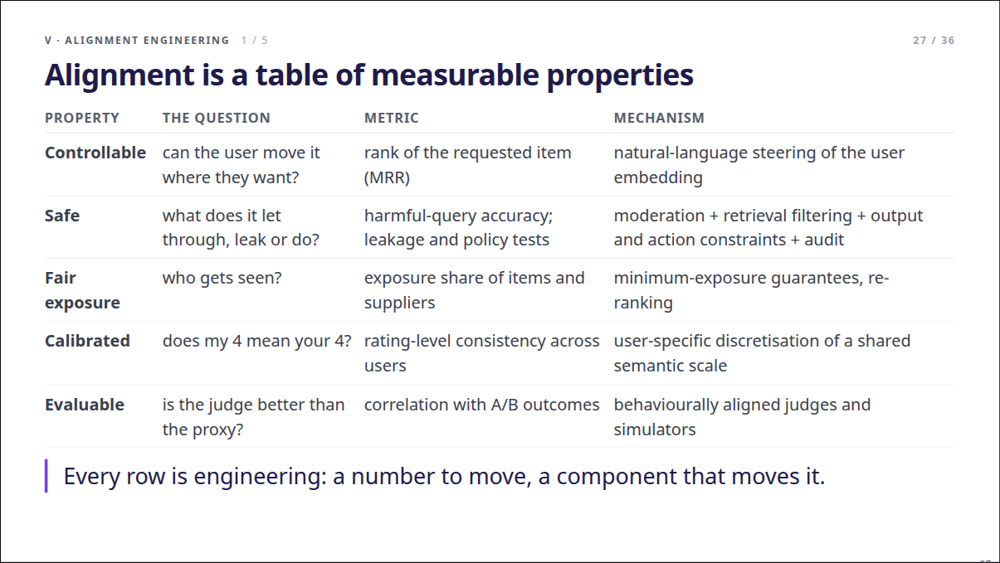
What this slide shows
Five properties, each with the question it answers, a metric and a mechanism. Controllable: can the user move the system where they want; the rank of the requested item; natural-language steering of the user vector. Safe: what does it let through, leak or do; harmful-query accuracy plus leakage and policy tests; moderation, retrieval filtering, output and action constraints, audit. Fair exposure: who gets seen; exposure share of items and suppliers; minimum-exposure guarantees and re-ranking. Calibrated: does my four mean your four; rating-level consistency across users; user-specific discretisation of a shared semantic scale. Evaluable: is the judge better than the proxy; correlation with A/B outcomes; behaviourally aligned judges and simulators. The closing line: every row is engineering, a number to move and a component that moves it.
Concepts worth knowing
Alignment, in the language-model world, means making a model behave according to human intent and values. For an engineer building a ranking system it decomposes into properties that can each be measured and enforced, which is what this table does.
Exposure is how often an item or a supplier is shown at all; in a ranked list, exposure is the scarce resource the system allocates, and fairness is about its distribution.
Calibration here means that the same rating from different people means the same thing; a four-star from a generous reviewer and from a strict one are not the same signal.
A judge is a model used to evaluate another model's output, an increasingly common substitute for human judgement; a proxy is any offline measurement standing in for the real outcome.
The argument
Alignment for an engineer, as a table rather than a philosophy. Each row is unpacked on a following slide and each has a paper behind it: steering (slides 19–20), SHIELD (28), exposure guarantees (29), rating calibration (the lab's UMAP 2026 work on user-specific rating scales), behaviourally aligned judges (30). It sits after the cost section for a reason: the cheaper and more unified the stack becomes, the more power one ranking decision has, which turns control, safety, exposure and audit into first-class system requirements rather than afterthoughts.
Evidence and further reading
Recombee Research — the publications behind the rows: SHIELD and Mitigating Risks in Online Semantic Search (safety), Minimum Item Exposure Guarantees and SAGEA (fair exposure), The Stars Align (calibration, UMAP 2026), Bridging Offline-Online Evaluation and Repsys (evaluation).
Takeaway"Aligned" is not a mood a system is in; it is five numbers you can measure and five components you can build. Ask a vendor for the numbers.
028Convergence merges vulnerabilities: SHIELD
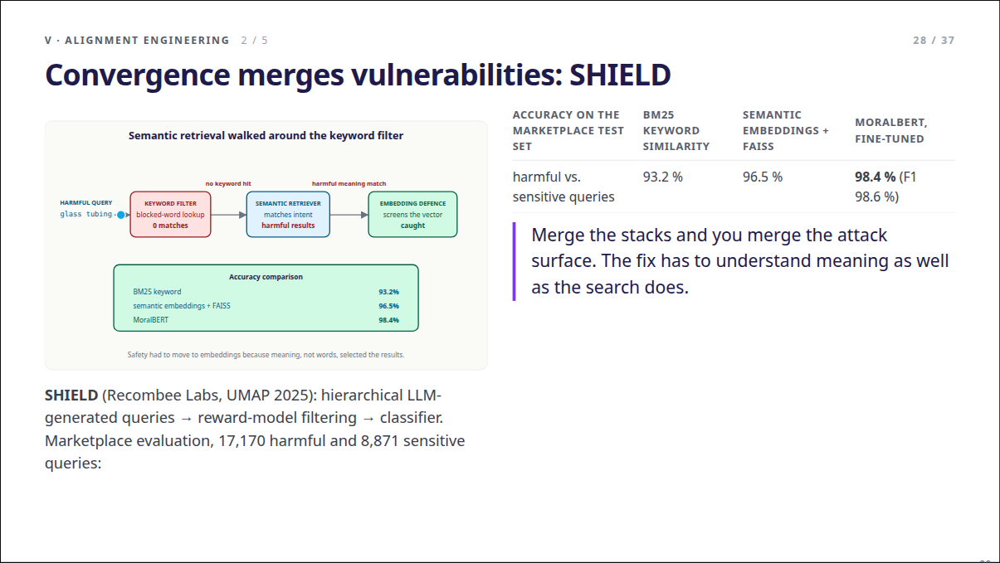
What this slide shows
The failure and the fix. Semantic retrieval understands meaning, so a query such as "glass tubing" passes a keyword blocklist and returns laboratory equipment with an obvious illicit use; a harmful request phrased without any blocked word is understood and answered. SHIELD, from Recombee Labs at UMAP 2025, is a three-stage pipeline: harmful and sensitive queries generated by a language model category by category, filtered by a reward model for realism, and used to train a classifier. On a marketplace test set of 17,170 harmful and 8,871 sensitive queries, BM25 keyword similarity reaches 93.2 % accuracy, semantic embeddings with a vector index 96.5 %, and the fine-tuned MoralBERT 98.4 % (F1 98.6 %). The closing line: merge the stacks and you merge the attack surface; the fix has to understand meaning as well as the search does.
Concepts worth knowing
A keyword blocklist refuses queries containing listed words; it protected marketplaces for a decade because keyword search could only find what the words said.
A classifier is a model that assigns a label, here harmful, sensitive or neither, to a query; accuracy is the share of labels it gets right, F1 balances how many harmful queries it catches against how many innocent ones it wrongly blocks.
A reward model is a model trained to score how good or realistic a text is; here it filters the generated training queries so that only convincing ones are kept.
The argument
The lab's own evidence that convergence is not free. The moment search became semantic, the keyword blocklists stopped working, because the retriever matches intent rather than strings. The remedy has to live at the same level, a classifier trained on semantically generated data, sitting in front of retrieval. The dataset itself is the reusable part; the classifier is one instance of what it makes possible.
TakeawayWhen you upgrade search to understand meaning, upgrade the safety layer to understand it too; a blocklist written for keywords is a door left open.
029Exposure and the feedback loop
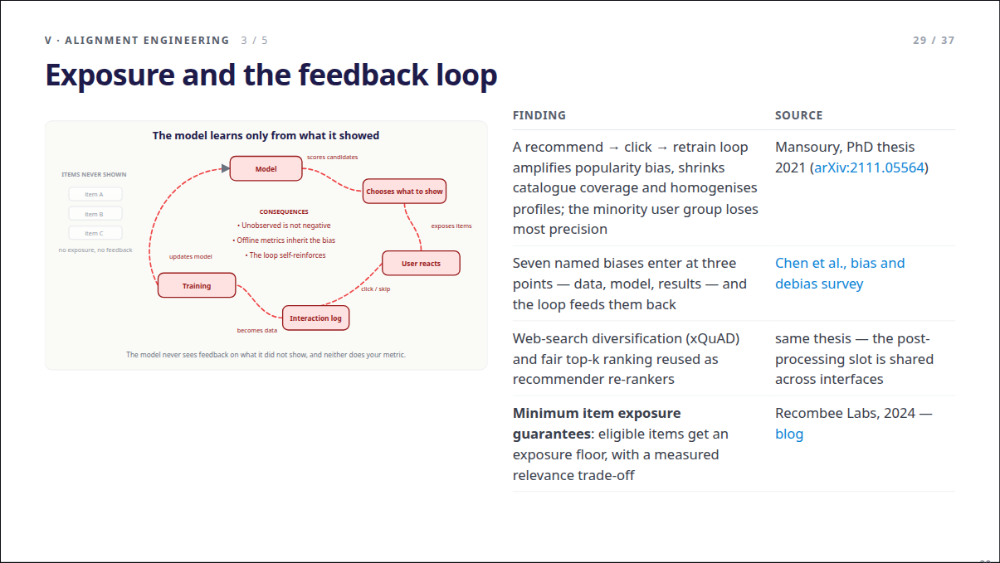
What this slide shows
The model learns only from what it showed. A recommend → click → retrain loop amplifies popularity bias, shrinks catalogue coverage and homogenises profiles, and the minority user group loses the most precision. Seven named biases enter at three points, data, model and results, and the loop feeds them back. Diversification from web search, xQuAD, and fair top-k ranking are reused as recommender re-rankers, which shows the post-processing slot is shared across interfaces. And the lab's minimum item exposure guarantees give eligible items an exposure floor with a measured relevance trade-off.
Concepts worth knowing
The feedback loop: a recommender shows items, people click among what was shown, the clicks become training data, the retrained model shows more of the same. Nothing outside the shown set can ever be learned about.
Popularity bias is the resulting drift toward already-popular items; coverage is the share of the catalogue that gets recommended at all, and it shrinks under the loop.
Re-ranking is a final step that reorders a ranked list to satisfy a constraint, diversity, fairness or a minimum exposure, at a small cost in raw relevance. xQuAD is a re-ranker originally built to diversify web search results.
A relevance trade-off is the measured price of a constraint: how much predicted engagement is given up to guarantee that every eligible item is shown at least sometimes.
The argument
An alignment topic anyone running a catalogue can act on: exposure is a resource the system allocates, and a floor on it is a constraint that can be enforced at re-ranking time. Two things stand out. The minority-user result turns "bias" from an abstraction into a measured loss for identifiable people; and the shared post-processing slot is convergence again, a web-search diversification algorithm running unchanged inside a recommender.
TakeawayBias is not a property of the data you collected; it is a property of the loop your system closes on itself. Exposure is the resource that loop allocates, and you can put a floor under it.
030Evaluation is alignment: judges need behavioural alignment too
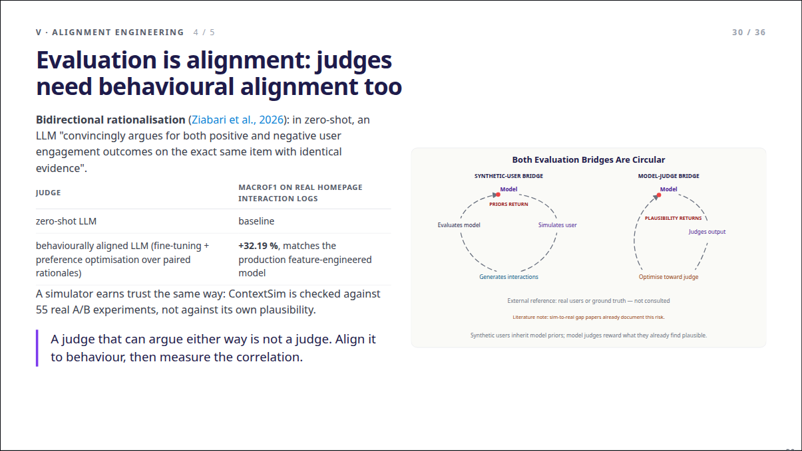
What this slide shows
Bidirectional rationalisation, a named failure mode: used zero-shot, a language model "convincingly argues for both positive and negative user engagement outcomes on the exact same item with identical evidence". Fine-tuning with preference optimisation over paired correct and counterfactual rationales lifts MacroF1 on real homepage interaction logs by 32.19 % over the zero-shot judge and matches the production feature-engineered model. A simulator earns trust the same way: ContextSim is validated against 55 real A/B experiments, not against its own plausibility. The closing line: a judge that can argue either way is not a judge; align it to behaviour, then measure the correlation. The figure shows why both evaluation bridges, synthetic users and model judges, are circular unless anchored outside the model.
Concepts worth knowing
LLM-as-a-judge means asking a language model to predict or rate what a person would do, instead of running an experiment with people; it is cheap and, unaligned, unreliable.
Zero-shot use means asking the model without any training on the task. Preference optimisation trains it on pairs of a correct and an incorrect rationale so that it learns which side the evidence actually supports.
MacroF1 averages the F1 score over classes so that rare outcomes count as much as common ones.
Offline evaluation uses logged data and metrics such as NDCG; online evaluation is an A/B test with real users; the gap between the two is the reason judges and simulators exist, and a Spearman correlation with real A/B outcomes is how a simulator proves it can stand in for them.
The argument
The bridge between the accuracy and the alignment axes. The tools that promise to replace offline metrics, language-model judges and agent simulators, have to be aligned to observed behaviour and checked against A/B outcomes before they are allowed to rank models, because they inherit the assumptions of the model that powers them. The failure mode now has a name, which makes it something to ask about. Behind this sits an older finding: offline metrics computed on sampled data can mis-rank methods and, as the judges paper puts it, frequently fail to correlate strongly with online results.
Mantha et al., 2026 — UniPinRec — the production example of the gap: a 14.8 % offline gain became about 1 % online, and the system shipped on latency and throughput.
TakeawayAn offline number is a hypothesis, an A/B test is the measurement, and anything you put in between, a judge or a simulator, has to be calibrated against real outcomes before it is allowed to decide.
031The rules outside the model
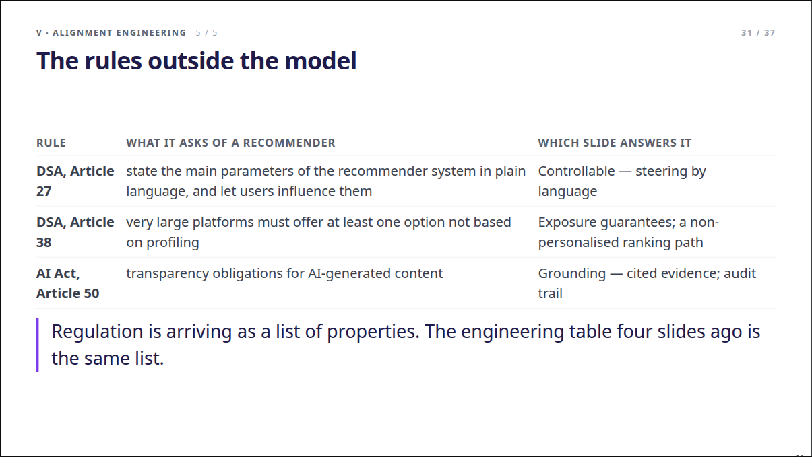
What this slide shows
Three European obligations mapped onto the engineering table. Digital Services Act, Article 27: state the main parameters of the recommender system in plain language and let users influence them, answered by the controllable row, steering by language. Article 38: very large platforms must offer at least one option not based on profiling, answered by exposure guarantees and a non-personalised ranking path. AI Act, Article 50: transparency obligations for AI-generated content, answered by grounding, cited evidence and an audit trail. The closing line: regulation is arriving as a list of properties, and the engineering table four slides ago is the same list.
Concepts worth knowing
The Digital Services Act (DSA) is the EU regulation for online platforms; its recommender provisions require transparency about how ranking works and, for the largest platforms, a way to opt out of personalisation. Profiling is building a picture of a person from their data to personalise what they see.
The AI Act is the EU regulation for AI systems; Article 50 concerns telling people when content was generated by AI.
An audit trail is a record of what the system showed and why, kept so that a decision can be reconstructed afterwards.
The argument
Kept short and factual. The point for anyone building such systems is that the properties the regulator names, explainable parameters, user control and transparency of generated output, are the rows of the alignment table on slide 27, which makes compliance an engineering deliverable rather than a legal appendix. Implementation dates and thresholds change; the mapping from obligation to component does not.
Evidence and further reading
The Digital Services Act (Regulation (EU) 2022/2065), Articles 27 and 38, and the AI Act (Regulation (EU) 2024/1689), Article 50, in their official texts.
Recombee Research — the lab's position on personalisation with genuine user value rather than ad targeting, which is the design stance behind the non-profiling path.
TakeawayThe regulator's list and the engineer's list are the same list. Build the properties and the compliance follows; bolt compliance on afterwards and you will build them anyway, later and worse.
VI · Future And Work
032The fourth interface: the consumer of the ranking changes
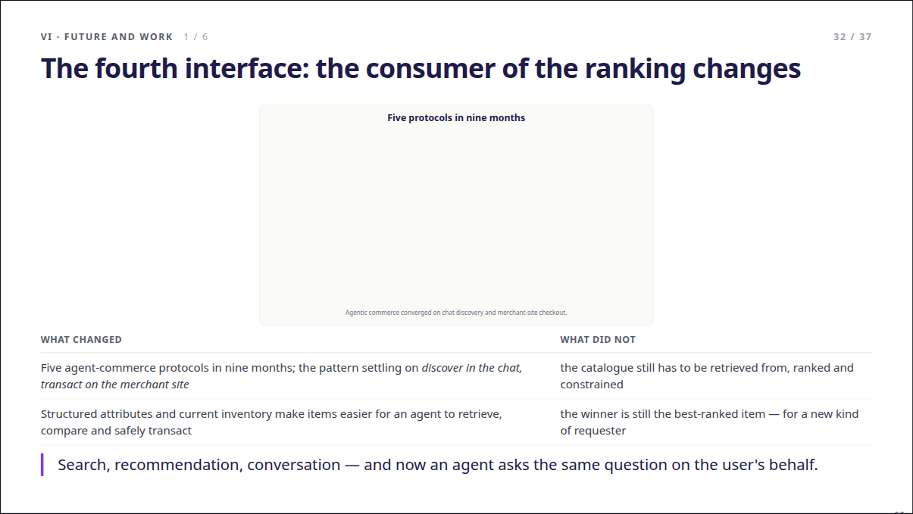
What this slide shows
Five agent-commerce protocols launched in nine months between April 2025 and January 2026, and a pattern settling on "discover in the chat, transact on the merchant site". What changed: an agent, not a person, reads the ranked list, and structured attributes with current inventory make items easier for it to retrieve, compare and safely transact. What did not: the catalogue still has to be retrieved from, ranked and constrained, and the winner is still the best-ranked item, for a new kind of requester. The closing line: search, recommendation, conversation, and now an agent asks the same question on the user's behalf.
Concepts worth knowing
An agent is a language-model-driven program that pursues a goal by taking actions, calling tools, reading results and deciding what to do next, rather than answering a single question.
Agent-commerce protocols are the emerging standards by which an agent can discover products, compare them and pay on a person's behalf; the ones on the figure are from payment networks, a search company and a model provider.
Structured attributes are machine-readable facts about an item, price, size, availability, in fields rather than in prose; an agent can act on a field and only guess at a paragraph.
The argument
The future section stays on the thesis rather than drifting into a general agents story: agents are not a new stack, they are a new client of the existing one. The protocol race is context and will date quickly; what lasts is the last row. Structured, machine-readable catalogues are what agents can act on, which is Jakub Klímek's keynote on semantic interoperability seen from inside the product; and the guard rails an agent needs, constrained decoding over a catalogue of valid identifiers, are Herwig Mannaert's keynote seen the same way.
Rajput et al., NeurIPS 2023 — TIGER — constrained decoding over semantic IDs, the mechanism that keeps a generative client inside the catalogue.
The protocol launches on the figure are dated from their public announcements and are illustrative context.
TakeawayAn agent shopping for you is the same ranking problem with a different requester; what it demands of your system is a catalogue it can read and a boundary it cannot cross.
033Four threads, one question
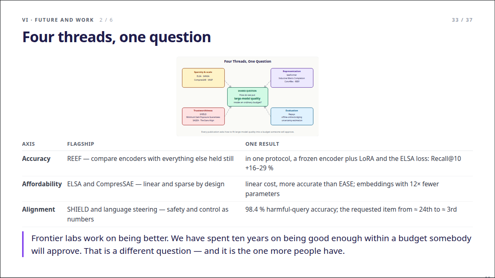
What this slide shows
The lab's portfolio on the talk's three axes, one flagship and one result each. Accuracy: REEF, compare encoders with everything else held still; a frozen encoder plus LoRA and the ELSA loss lifts Recall@10 by 16–29 %. Affordability: ELSA and CompresSAE, linear and sparse by design; linear cost, more accurate than EASE, embeddings with 12× fewer parameters. Alignment: SHIELD and language steering, safety and control as numbers; 98.4 % harmful-query accuracy, the requested item from about 24th to about 3rd. The figure groups the wider portfolio into four threads: sparsity and scale (ELSA, SANSA, CompresSAE, VASP), representation (beeFormer, inductive matrix completion, Conv4Rec, REEF), trustworthiness (SHIELD, minimum item exposure guarantees, SAGEA, The Stars Align) and evaluation (Repsys, bridging offline and online evaluation, uncertainty estimation, linear autoencoders at industrial scale). The closing line: frontier labs work on being better; this lab has spent ten years on being good enough within a budget somebody will approve, which is a different question and the one more people have.
Concepts worth knowing
Sparsity as a design principle: representations and models with mostly-zero parts, chosen because they are cheaper to store and search, not compressed afterwards.
Trustworthiness collects the properties of slide 27: safe, fair, calibrated, controllable.
A frontier lab is one of the few organisations training the largest models; the closing line contrasts their question, how good can it get, with the question most organisations actually have.
The argument
The portfolio in one table, so that every project named here was already used as evidence for a specific claim earlier in the talk. Each thread maps to an axis: sparsity and representation to affordability, trustworthiness to alignment, evaluation to accuracy. The closing sentence is the honest position of a lab with production traffic across thousands of catalogues but without a trillion-parameter budget.
TakeawayBeing good enough within a budget somebody will approve is a research question in its own right, and it is the one most organisations actually have.
034Where this goes: controllable, evaluable, safe ... and perhaps agentic ...
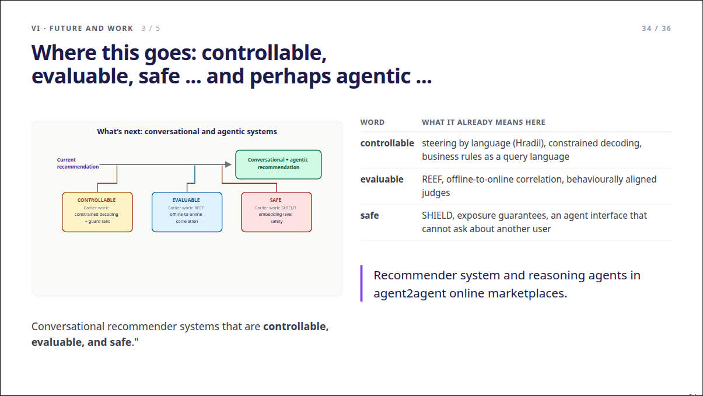
What this slide shows
The lab's stated direction, conversational recommender systems that are controllable, evaluable and safe, mapped word by word onto what the talk has shown. Controllable: steering by language, constrained decoding, business rules as a query language. Evaluable: REEF, offline-to-online correlation, behaviourally aligned judges. Safe: SHIELD, exposure guarantees, and an agent interface that cannot ask about another user. The closing line looks one step further: recommender systems and reasoning agents in agent-to-agent online marketplaces.
Concepts worth knowing
A query language for business rules lets an operator state constraints ("only items in stock, boost this brand in this region") in a form both people and machines can read; it is the operator's counterpart of the user's natural-language steering.
The Model Context Protocol (MCP) is a standard way for an agent to call tools with authentication; the design mentioned under "safe" binds the user's identity to the credential rather than to a parameter, so an agent has no way to ask about someone else.
Agent-to-agent marketplaces are the scenario where a buyer's agent negotiates with sellers' agents; ranking then happens on both sides.
The argument
Mapping the direction back to the talk keeps the future from being a wish list: each word already has a working instance, and the two master's theses in the deck, Hradil's steering and Laurin's REEF, are its first steps, both defended in May 2026. What the agentic step adds is a change of consumer, and with it a change of what "safe" must cover.
Evidence and further reading
A 2025 research retrospective — the direction in the lab's own words: systems that "plan and adapt sequences of actions while staying controllable, evaluable, and safe".
TakeawayControllable, evaluable and safe are not aspirations here; each already names a working component. The open question is what they mean when the one asking is an agent.
035Recombee research, 2022 → 2026: the papers behind this talk
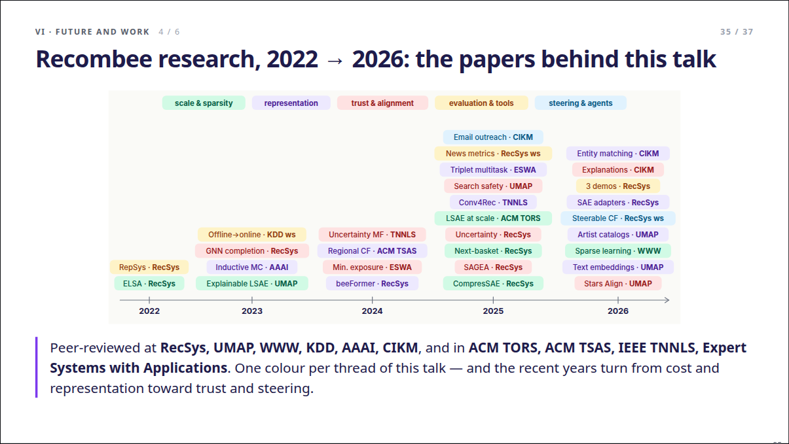
What this slide shows
A timeline of the lab's publications, twenty-nine peer-reviewed papers in five years, one pill per paper with its venue, coloured by the theme it belongs to in this talk. 2022: ELSA and RepSys at RecSys. 2023: explainable linear autoencoders at UMAP, inductive matrix completion at AAAI, uncertainty-adjusted matrix completion with graph neural networks at RecSys, offline-to-online evaluation at the EvalRS workshop at KDD. 2024: beeFormer at RecSys, minimum exposure guarantees in Expert Systems with Applications, regionalisation-based collaborative filtering in ACM Transactions on Spatial Algorithms and Systems, uncertainty-adjusted matrix factorization in IEEE TNNLS. 2025: CompresSAE, SAGEA, a linear next-basket model and uncertainty estimation at RecSys, linear autoencoders at industrial scale in ACM Transactions on Recommender Systems, Conv4Rec in IEEE TNNLS, the harmful-query dataset behind SHIELD at UMAP, active recommendation for email outreach at CIKM, editorial analytics with The Telegraph at the news-recommendation workshop at RecSys. 2026: rating calibration and language embeddings meeting shallow autoencoders at UMAP, sparse representations learned from interactions at WWW, steerable collaborative filtering at the interactive-recommendation workshop and semantic domain adapters plus three demos at RecSys, explanations from counterfactual edits and product de-duplication at CIKM.
Concepts worth knowing
RecSys, UMAP, WWW, KDD, CIKM, AAAI are the peer-reviewed conferences where recommender-systems, user-modelling, web and knowledge-management research is judged; ACM TORS and IEEE TNNLS are journals. A paper in these venues has been reviewed by researchers outside the lab.
A workshop paper (EvalRS at KDD, INRA and IntRS at RecSys) is an earlier-stage result presented to a focused community; a demo is a working system shown at the conference.
The five colours are the themes of this talk: scale and sparsity (slides 12 and 24), representation (25–26), trust and alignment (27–31), evaluation and tools (26 and 30) and steering and agents (16–20, 32–34).
The argument
The timeline is the talk's evidence base seen from the other side: every method presented as "ours" has a peer-reviewed home, and the themes of the talk are the threads the lab has been pulling on for five years. Two things are visible at a glance. The lab publishes where the field it serves is judged, RecSys above all, with UMAP for the user-facing work and the top general venues, WWW, KDD, CIKM and AAAI, for the methods that travel further. And the colours drift over time: green and purple, scale and representation, dominate the early years; red and blue, alignment and steering, take over the recent ones, with generative and foundation models, language embeddings, sparse autoencoders and agents, now in the mix. That drift is the "where this goes" of the previous slide, already under way.
TakeawayThe methods in this talk are not a company's marketing; each has a peer-reviewed home, and the lab's themes have moved over five years from making recommenders cheap toward making them controllable and safe.
036Thank you
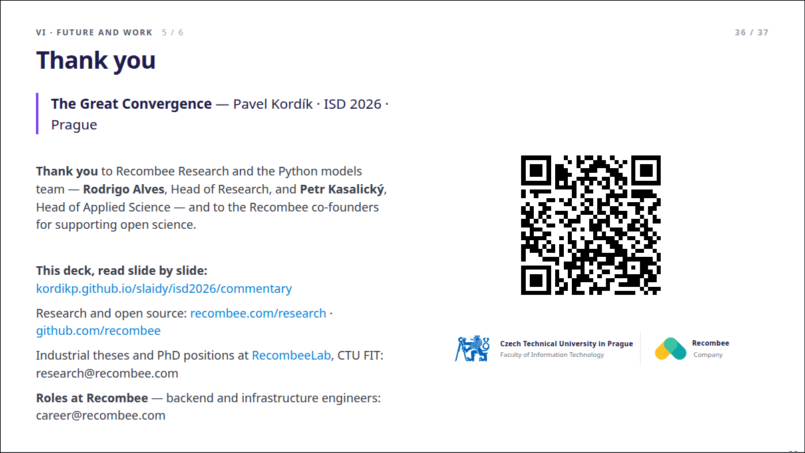
What this slide shows
The title once more, thanks to the people behind the research, and where to continue: this commentary, by link and by the QR code; research and open source at recombee.com/research and github.com/recombee; industrial theses and PhD positions at RecombeeLab, CTU FIT, by mail to research@recombee.com; and open engineering roles at Recombee, backend and infrastructure, by mail to career@recombee.com.
The argument
The invitation is specific on purpose: the lab's method, described on slides 33 and 35, depends on people who bring a production question to a paper and a paper back to production, and the two theses in this deck are what that looks like.
TakeawayIf a question in this talk is one you have in your own system, the lab takes industrial theses and PhD students, Recombee hires backend and infrastructure engineers, and the code is open.
037What else I’m building or collaborating on ...
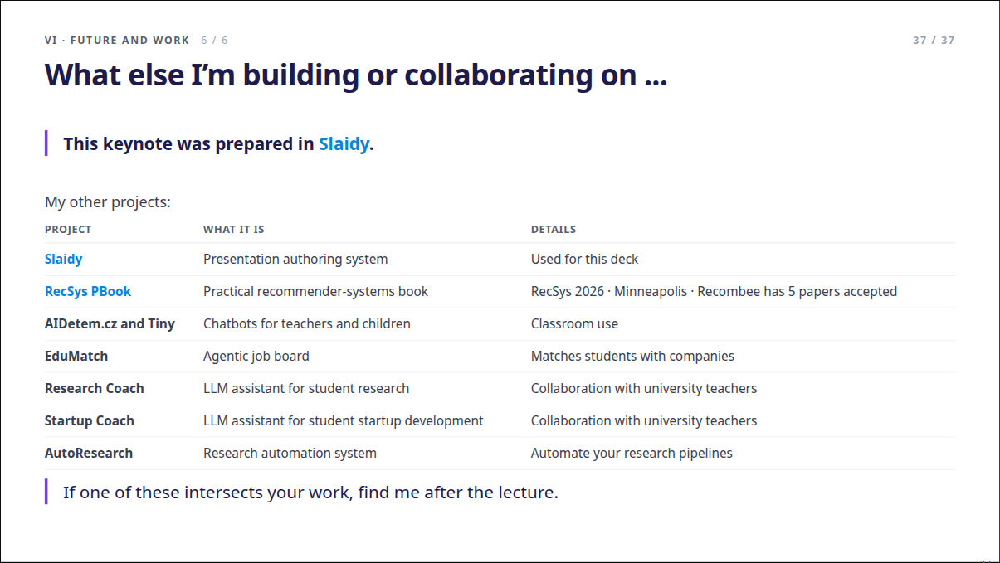
What this slide shows
The deck was prepared in Slaidy, a single-file presentation tool, and the table lists other projects: Slaidy itself; RecSys PBook, a practical recommender-systems book to be presented at RecSys 2026 in Minneapolis, where Recombee has five papers accepted; AIDetem.cz and Tiny, chatbots for teachers and children; EduMatch, an agentic job board matching students with companies; Research Coach and Startup Coach, language-model assistants for student research and startups; and AutoResearch, a system for automating research pipelines. The closing line: if one of these intersects your work, find me after the lecture.
Concepts worth knowing
A single-file tool is an application that is one HTML file with no installation and no dependencies; Slaidy edits, presents, exports and produced this commented page from the same source.
A living book personalised by a recommender is one where the order and form of the content adapt to the reader, and the reader's profile is visible and editable.
The argument
Invitations rather than product announcements, and several are the talk's ideas applied elsewhere: the book is personalised by a recommender, the job board is an agent ranking matches, the coaches are grounded assistants. For an information-systems audience the closest one is Slaidy, because the deck just watched is also a demonstration of the tool.
Evidence and further reading
Slaidy — the tool, with this deck published from it.
TakeawayThe ideas in this talk are being applied in education, hiring and research support as well as in commerce; the conversation after the lecture is where those threads meet.
Hradil, J., 2026 — Natural Language Steering of Recommender Systems via User Embedding Manipulation. Master's thesis, CTU FIT (supervisor Rodrigo Alves).
Laurin, T., 2026 — Training and Evaluation of Foundation Models for Recommender Systems. Master's thesis, CTU FIT (supervisor Pavel Kordík).